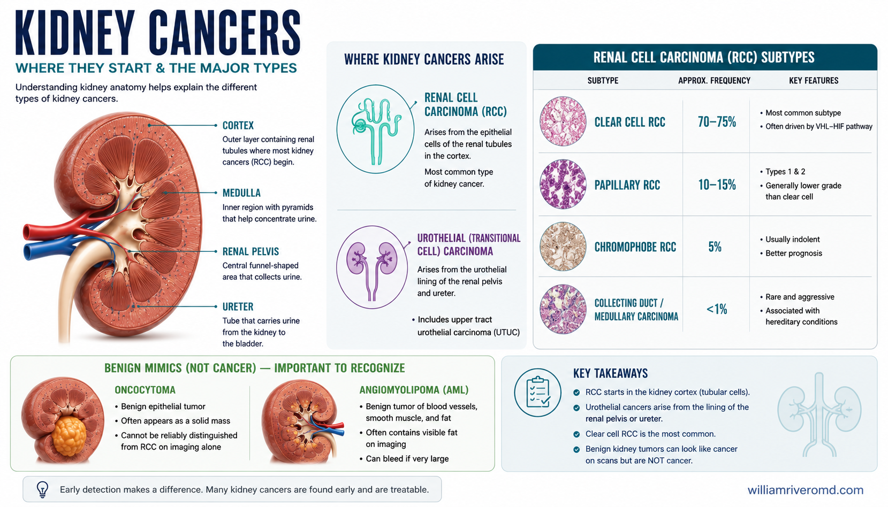
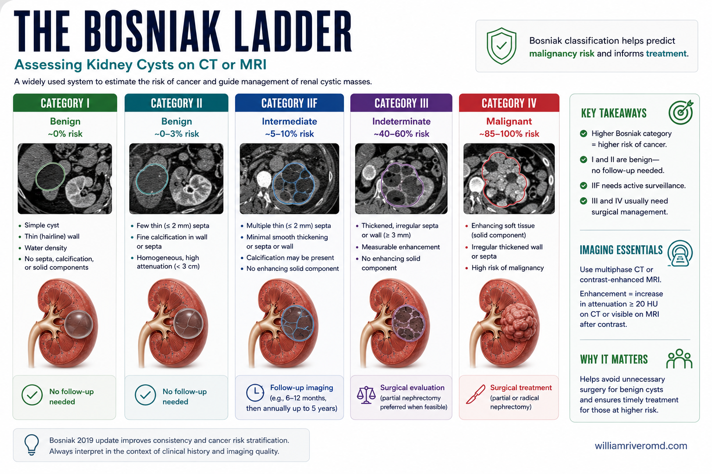
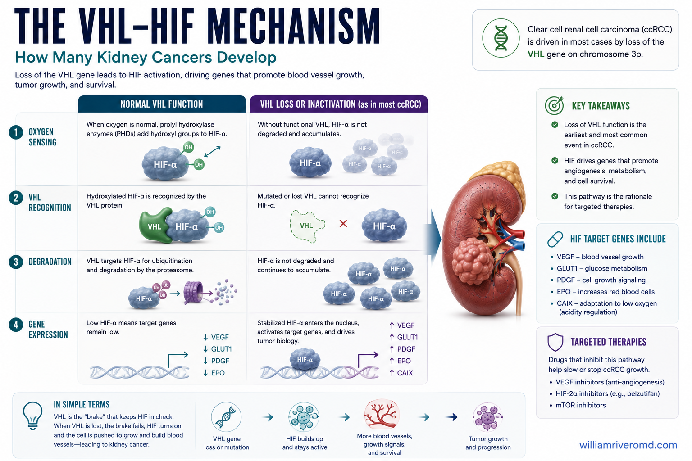
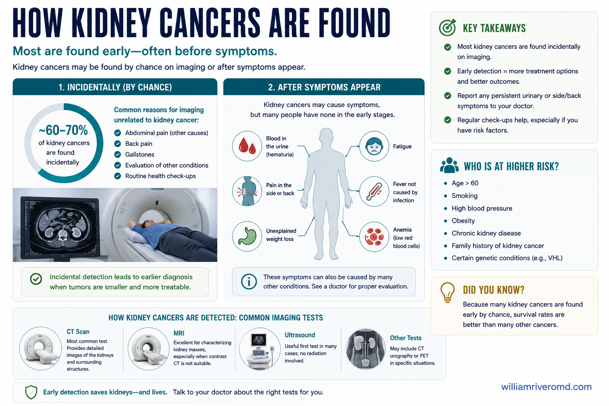
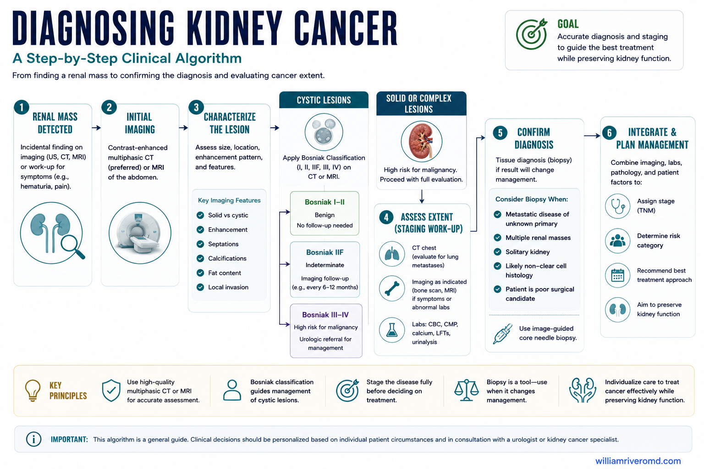
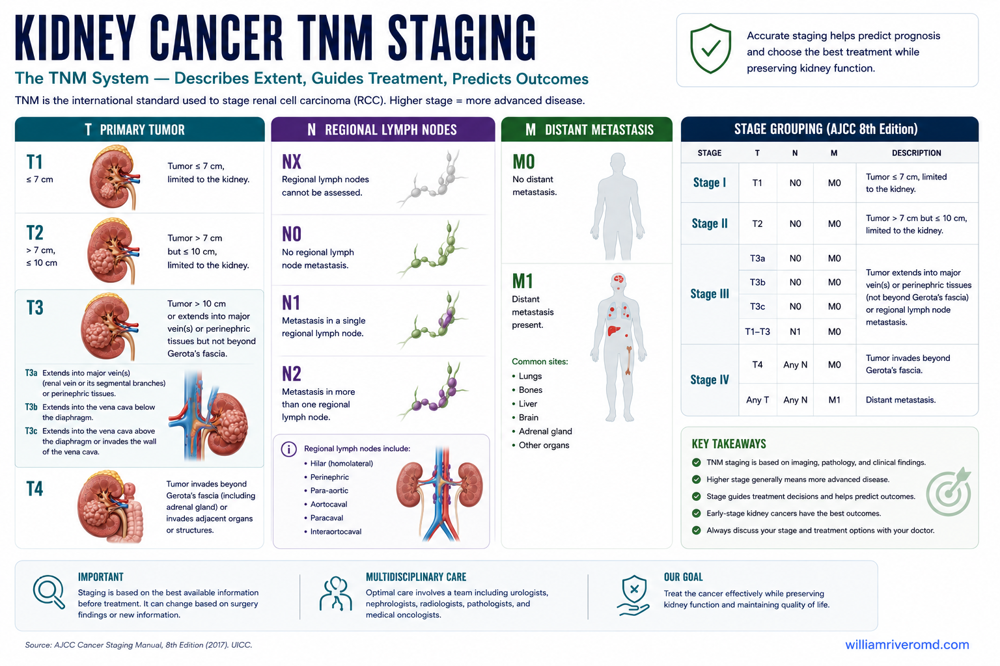
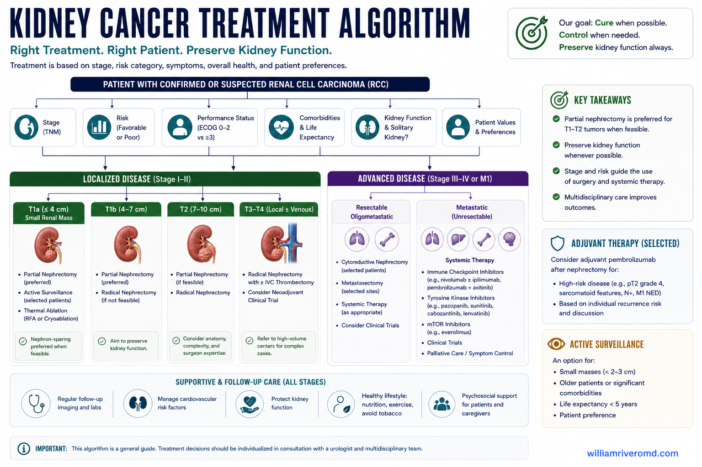
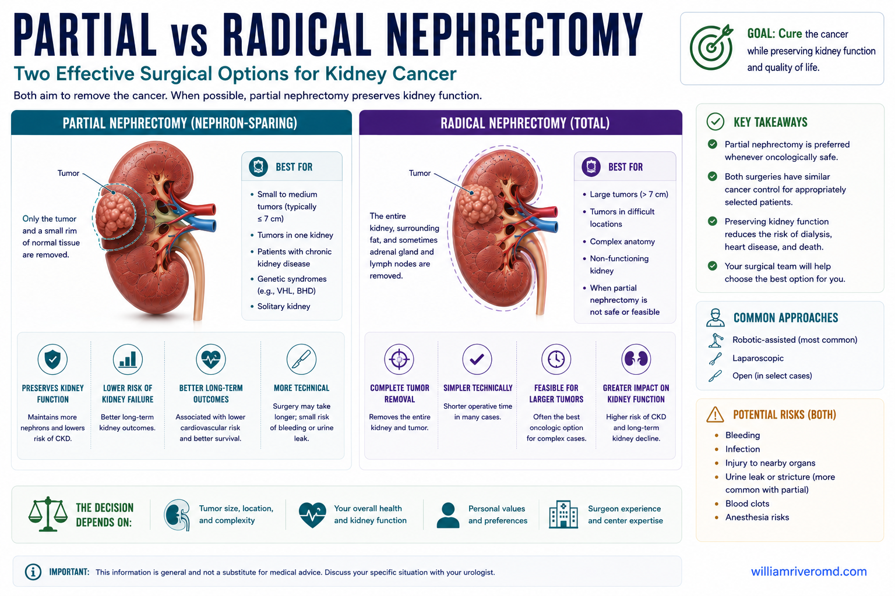
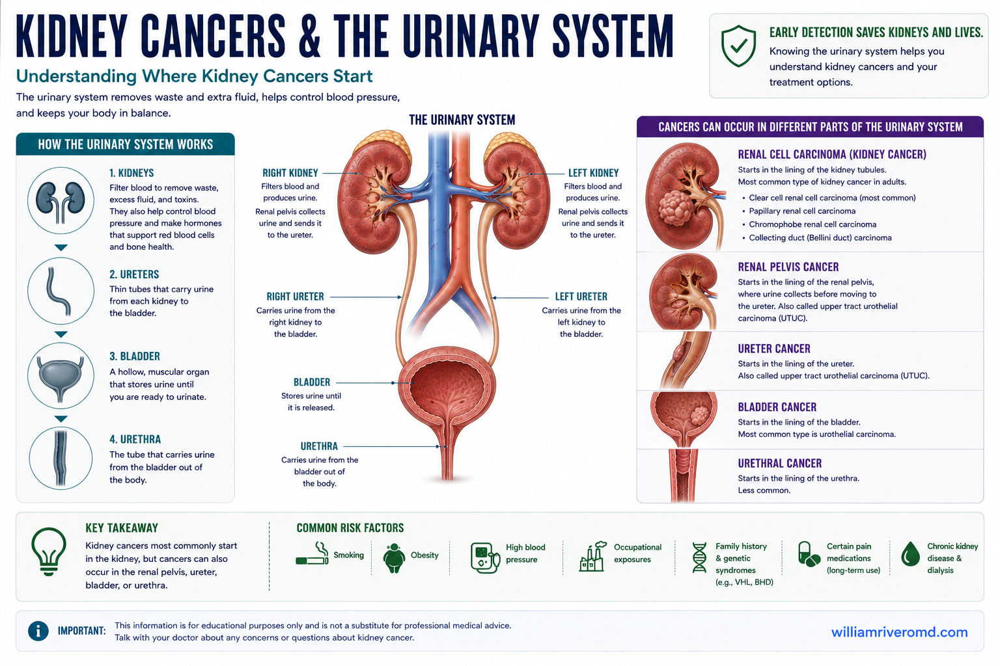

Kidney Cancer — Key FactsKanser sa Bato — Mahahalagang KatotohananKanser sa Kidney — Mga Importanteng Kamatuoran Kanser king Batu — Mahahalagang Katotohanan
Kidney cancer is among the top 10 cancers worldwide. The most important fact: most kidney cancers are found incidentally on imaging done for other reasons — before any symptoms appear. When found early (Stage I), the 5-year survival rate exceeds 90%. When found at Stage IV, it falls below 15%. Incidental discovery is your best chance.Ang kanser sa bato ay kabilang sa nangungunang 10 na kanser sa buong mundo. Ang pinakamahalagang katotohanan: karamihan sa mga kanser sa bato ay natutuklasan nang hindi sinasadya sa imaging na ginawa para sa ibang dahilan — bago pa lumabas ang anumang sintomas. Kapag natuklasan nang maaga (Stage I), ang 5-taong survival rate ay lumagpas sa 90%. Kapag natuklasan sa Stage IV, bumaba ito sa ibaba ng 15%. Ang hindi sinasadyang pagtuklas ay ang inyong pinakamahusay na pagkakataon.Ang kanser sa kidney kabilang sa nangungunang 10 ka kanser sa tibuok kalibutan. Ang labing importanteng kamatuoran: kadaghanan sa mga kanser sa kidney nakit-an sa walay tuyo sa imaging nga gihimo alang sa ubang hinungdan — sa wala pa mogawas ang bisan unsang sintomas. Kon nakit-an sayo (Stage I), ang 5-ka-tuig nga survival rate molapas sa 90%. Kon nakit-an sa Stage IV, mohulog kini sa ubos sa 15%. Ang walay tuyo nga pagkakita mao ang imong labing maayong kahigayonan. Ing kanser king batu ya kabilang king nangungunang 10 a kanser king buong mundo. Ing pinakamahalagang katotohanan: kadaklan king deng kanser king batu ya natutuklasan nang ali sinasadya king imaging a ginawa para king ibang dahilan — bago pa lumabas ing anumang sintomas. Nung natuklasan nang maaga (Stage I), ing 5-taong survival rate ya lumagpas king 90%. Nung natuklasan king Stage IV, bumaba ini king ibaba ning 15%. Ing ali sinasadyang pagtuklas ya ing inyu pinakamahusay a pagkakabanua.
The "incidentaloma" advantageAng kalamangan ng "incidentaloma"Ang bentahe sa "incidentaloma" Ing kalamangan ning "incidentaloma"
With the widespread use of ultrasound and CT scans in the Philippines for routine health checks, abdominal pain evaluation, and CKD monitoring, kidney tumors are increasingly found before causing any symptoms — when curative surgery is most effective.Sa malawakang paggamit ng ultrasound at CT scan sa Pilipinas para sa mga regular na pagsusuri sa kalusugan, pagsusuri ng sakit ng tiyan, at pagsubaybay sa CKD, ang mga tumor sa bato ay lalong natutuklasan bago pa makapagdulot ng anumang sintomas — kapag pinaka-epektibo ang kuratibon na operasyon.Sa lapad nga paggamit sa ultrasound ug CT scan sa Pilipinas alang sa regular nga pagsusi sa kahimsog, pagsusi sa sakit sa tiyan, ug pagbantay sa CKD, ang mga tumor sa kidney lalong nakit-an sa wala pa magdulot og bisan unsang sintomas — kon pinaka-epektibo ang kuratibon nga operasyon. King malawakang paggamit ning ultrasound at CT scan king Pilipinas para king deng regular a pagsusuri king kalusugan, pagsusuri ning sakit ning tiyan, at pagsubaybay king CKD, ing deng tumor king batu ya lalong natutuklasan bago pa makapagdulot ning anumang sintomas — nung pinaka-epektibo ing kuratibon a operasyon.
CKD patients have higher riskAng mga pasyenteng may CKD ay may mas mataas na panganibAng mga pasyente nga may CKD adunay mas taas nga peligro Ing deng pasyenteng atin CKD ya atin mas matas a panganib
Patients with CKD, especially those on long-term dialysis and those with acquired cystic kidney disease (ACKD), have 3–7 times the general population's risk of developing renal cell carcinoma. Annual kidney ultrasound is part of standard dialysis monitoring.Ang mga pasyenteng may CKD, lalo na ang mga nasa pangmatagalang dialysis at may acquired cystic kidney disease (ACKD), ay may 3–7 beses na mas mataas na panganib na magkaroon ng renal cell carcinoma kaysa sa pangkalahatang populasyon. Ang taunan na kidney ultrasound ay bahagi ng pamantayang pagsubaybay sa dialysis.Ang mga pasyente nga may CKD, ilabi na kadtong naa sa pangmatagalang dialysis ug adunay acquired cystic kidney disease (ACKD), adunay 3–7 ka beses nga mas taas nga peligro sa pagpalambo sa renal cell carcinoma kaysa sa kinatibuk-ang populasyon. Ang tinuig nga kidney ultrasound bahin sa naandang pagbantay sa dialysis. Ing deng pasyenteng atin CKD, lalo a ing deng nasa pangmatagalang dialysis at atin acquired cystic kidney disease (ACKD), ya atin 3–7 beses a mas matas a panganib a magkaroon ning renal cell carcinoma kaysa king pangkalahatang populasyon. Ing taunan a kidney ultrasound ya bahagi ning pamantayang pagsubaybay king dialysis.
Not All Kidney Cancers Are the SameHindi Lahat ng Kanser sa Bato ay ParehoDili Tanan nga Kanser sa Kidney Managsama Ali Amin ning Kanser king Batu ya Pareho

Renal cell carcinoma (RCC) arises from the cortical tubular cells. Transitional cell carcinoma (TCC/UTUC) arises from the lining of the renal pelvis and ureter. Each has distinct biology, staging, and treatment.
Renal Cell Carcinoma (RCC) — Clear CellRenal Cell Carcinoma (RCC) — Clear CellRenal Cell Carcinoma (RCC) — Clear Cell Renal Cell Carcinoma (RCC) — Clear Cell
Most common kidney cancer. Arises from proximal tubular cells in the cortex. Strongly associated with VHL gene mutation. Highly vascular — bleeds easily. Responds to targeted therapy (TKIs) and immunotherapy (checkpoint inhibitors). Tobacco and obesity are major risk factors.Ang pinakakaraniwang kanser sa bato. Nagmumula sa mga proximal tubular cell sa cortex. Malakas na nauugnay sa mutasyon ng VHL gene. Lubhang may daluyan ng dugo — madaling dumugo. Tumutugon sa targeted therapy (TKIs) at immunotherapy (checkpoint inhibitors). Ang tabako at labis na timbang ay pangunahing salik ng panganib.Ang labing kasagaran nga kanser sa kidney. Nagagikan sa mga proximal tubular cell sa cortex. Kusganong naugnay sa mutasyon sa VHL gene. Daghan kaayo og ugat sa dugo — sayon nga magdugo. Nagtubag sa targeted therapy (TKIs) ug immunotherapy (checkpoint inhibitors). Ang tabako ug labaw nga timbang pangunahing hinungdan sa peligro. Ing pinakakaraniwang kanser king batu. Nagmumula king deng proximal tubular cell king cortex. Malakas a nauugnay king mutasyon ning VHL gene. Lubhang atin daluyan ning daya — madaling dumugo. Tumutugon king targeted therapy (TKIs) at immunotherapy (checkpoint inhibitors). Ing tabako at labis a timbang ya pangunahing salik ning panganib.
Urothelial Carcinoma (TCC / UTUC)Urothelial Carcinoma (TCC / UTUC)Urothelial Carcinoma (TCC / UTUC) Urothelial Carcinoma (TCC / UTUC)
Arises from the transitional cell lining of the renal pelvis, ureter, or bladder. Upper tract urothelial carcinoma (UTUC) is particularly common in Taiwan and parts of Southeast Asia due to aristolochic acid (herbal medicine) exposure and BK virus. Presents with painless hematuria.Nagmumula sa transitional cell lining ng renal pelvis, ureter, o pantog. Ang upper tract urothelial carcinoma (UTUC) ay lalong karaniwan sa Taiwan at bahagi ng Timog-silangang Asya dahil sa aristolochic acid (gamot na herbal) at BK virus. Nagpapakita ng hindi masakit na hematuria.Nagagikan sa transitional cell lining sa renal pelvis, ureter, o pantog. Ang upper tract urothelial carcinoma (UTUC) labi ka kasagaran sa Taiwan ug bahin sa Timog-silangang Asya tungod sa aristolochic acid (herbal nga tambal) ug BK virus. Nagpakita sa walay sakit nga hematuria. Nagmumula king transitional cell lining ning renal pelvis, ureter, o pantog. Ing upper tract urothelial carcinoma (UTUC) ya lalong karaniwan king Taiwan at bahagi ning Timog-silangang Asya dahil king aristolochic acid (gamut a herbal) at BK virus. Nagpapakita ning ali masakit a hematuria.
Wilms Tumor (Nephroblastoma)Wilms Tumor (Nephroblastoma)Wilms Tumor (Nephroblastoma) Wilms Tumor (Nephroblastoma)
The most common kidney cancer in children (ages 3–4 peak). Embryonal tumor arising from primitive kidney cells. Often presents as a painless abdominal mass found by parents or on routine exam. Excellent prognosis — 5-year survival >90% with modern chemotherapy + surgery ± radiation.Ang pinakakaraniwang kanser sa bato sa mga bata (kasukdulan sa edad 3–4). Embryonal tumor na nagmumula sa mga primitive na selula ng bato. Madalas na nagpapakita bilang isang hindi masakit na masa sa tiyan na natuklasan ng mga magulang o sa regular na pagsusuri. Mahusay na prognosis — 5-taong survival na higit sa 90% sa modernong chemotherapy + operasyon ± radiation.Ang labing kasagaran nga kanser sa kidney sa mga bata (tuktok sa edad 3–4). Embryonal tumor nga nagagikan sa mga primitive nga selula sa kidney. Sagad nagpakita nga usa ka walay sakit nga masa sa tiyan nga nakit-an sa mga ginikanan o sa regular nga pagsusi. Maayo nga prognosis — 5-ka-tuig nga survival nga labaw sa 90% sa modernong chemotherapy + operasyon ± radiation. Ing pinakakaraniwang kanser king batu king deng bata (kasukdulan king edad 3–4). Embryonal tumor a nagmumula king deng primitive a selula ning batu. Madalas a nagpapakita bilang metung a ali masakit a masa king tiyan a natuklasan ning deng magulang o king regular a pagsusuri. Mahusay a prognosis — 5-taong survival a higit king 90% king modernong chemotherapy + operasyon ± radiation.
Renal Lymphoma & MetastasesRenal Lymphoma at MetastasisRenal Lymphoma ug Metastasis Renal Lymphoma at Metastasis
The kidney can be involved by lymphoma (usually non-Hodgkin's) or by metastases from lung, breast, colon, or melanoma. Bilateral kidney involvement, multiple lesions, and systemic symptoms (fever, weight loss, night sweats) suggest lymphoma rather than primary kidney cancer.Ang bato ay maaaring maapektuhan ng lymphoma (karaniwang non-Hodgkin's) o ng metastasis mula sa baga, suso, colon, o melanoma. Ang pagsasangkot ng parehong bato, maraming sugat, at mga sistematikong sintomas (lagnat, pagbaba ng timbang, pawis sa gabi) ay nagmumungkahi ng lymphoma kaysa sa pangunahing kanser sa bato.Ang kidney mahimong maapektuhan sa lymphoma (kasagaran non-Hodgkin's) o sa metastasis gikan sa baga, dughan, colon, o melanoma. Ang pagsangkot sa duha ka kidney, daghang sugat, ug mga sistematikong sintomas (hilanat, paghulog sa timbang, singot sa gabii) nagsugyot sa lymphoma kaysa sa pangunahing kanser sa kidney. Ing batu ya maaaring maapektuhan ning lymphoma (karaniwang non-Hodgkin's) o ning metastasis mula king baga, suso, colon, o melanoma. Ing pagsasangkot ning parehong batu, dacal a sugat, at deng sistematikong sintomas (lagnat, pagbaba ning timbang, pawis king gabi) ya nagmumungkahi ning lymphoma kaysa king pangunahing kanser king batu.
| Subtype (% of RCC) | Driver / molecular | Behavior & systemic-therapy relevance |
|---|---|---|
| Clear cell (70–75%) | VHL loss → HIF-1α/2α ↑ → VEGF/PDGF; 3p deletion, PBRM1, SETD2, BAP1 | Most angiogenic; responds best to anti-VEGF TKIs + IO. BAP1 loss = worse grade/prognosis. |
| Papillary, type 1 / type 2 (10–15%) | Type 1: MET activation. Type 2: heterogeneous — FH (HLRCC), NRF2, CDKN2A | Less VEGF-driven. Type 2 / FH-deficient is aggressive — cabozantinib ± IO; consider bevacizumab–erlotinib in HLRCC. |
| Chromophobe (5%) | Multiple chromosomal losses; TP53/PTEN | Generally indolent; lower metastatic potential. Distinguish from oncocytoma. |
| Collecting duct / renal medullary | Medullary: SMARCB1 (INI1) loss, sickle-cell trait | Highly aggressive, chemo-responsive (platinum), poor prognosis. Test sickle status. |
| Benign mimics | Oncocytoma; angiomyolipoma (TSC1/2, fat on CT) | Not cancer — but oncocytoma cannot be reliably distinguished from chromophobe on imaging/biopsy. |
"I Have a Kidney Mass — What Now?""May Masa sa Aking Bato — Ano Ngayon?""May Masa sa Akong Kidney — Unsa Karon?""Atin Masa king Batu Ku — Ano Ngeni?"
Most kidney masses are found by accident on a scan done for something else — and the first question is always the same: is it a simple cyst, or a solid mass? Simple cysts (just fluid-filled sacs) are extremely common and almost always harmless. A solid mass, or a cyst with thick walls or solid parts, needs closer evaluation. Finding out which one you have is the single most important next step — and it usually only requires a CT or MRI with contrast.Karamihan sa mga masa sa bato ay natutuklasan nang hindi sinasadya sa isang scan na ginawa para sa ibang dahilan — at ang unang tanong ay laging pareho: simpleng cyst ba ito, o solid na masa? Ang mga simpleng cyst (puno lang ng likido) ay napakakaraniwan at halos laging hindi nakakapinsala. Ang solid na masa, o cyst na may makapal na dingding o solid na bahagi, ay nangangailangan ng mas malapit na pagsusuri. Ang pag-alam kung alin ang mayroon ka ang pinakamahalagang susunod na hakbang — at kadalasan ay kailangan lang ng CT o MRI na may contrast.Kadaghanan sa mga masa sa kidney makit-an sa walay tuyo sa usa ka scan nga gihimo alang sa lain — ug ang unang pangutana kanunay parehas: simpleng cyst ba kini, o solid nga masa? Ang simpleng cyst (puno lang og likido) komon kaayo ug halos kanunay dili makadaot. Ang solid nga masa, o cyst nga may baga nga bongbong o solid nga bahin, nanginahanglan og mas duol nga pagsusi. Ang pagkahibalo kon hain ang naa nimo mao ang labing importanteng sunod nga lakang — ug kasagaran nanginahanglan lang og CT o MRI nga may contrast.Kadaklan king deng masa king batu ya natutuklasan nang ali sinasadya king metung a scan a ginawa para king ibang dahilan — at ing mumunang tanong ya pirmi pareho: simpleng cyst ya ini, o solid a masa? Ing deng simpleng cyst (mitmu mu likido) ya makaras a karaniwan at halos pirming ali makasama. Ing solid a masa, o cyst a atin makapal a dinding o solid a bahagi, ya nangangailangan ning mas malapit a pagsusuri. Ing pamibalu nung nu ing atin ka ya ing pinakamahalagang susunod a dapat — at kadalasan kailangan mu ning CT o MRI a atin contrast.

The Bosniak system grades cystic kidney masses by how complex they look on contrast imaging. Categories I and II are harmless. IIF is watched over time. III and IV usually need treatment.Inuuri ng Bosniak system ang mga cystic na masa sa bato ayon sa pagiging komplikado ng anyo sa contrast imaging. Ang Category I at II ay hindi nakakapinsala. Ang IIF ay sinusubaybayan sa paglipas ng panahon. Ang III at IV ay kadalasang nangangailangan ng paggamot.Gigrado sa Bosniak system ang mga cystic nga masa sa kidney sumala sa kakomplikado niini sa contrast imaging. Ang Category I ug II dili makadaot. Ang IIF gibantayan sa paglabay sa panahon. Ang III ug IV kasagaran nanginahanglan og pagtambal.Inuuri ning Bosniak system ing deng cystic a masa king batu ayon king kakomplikado ning anyu king contrast imaging. Ing Category I at II ya ali makasama. Ing IIF ya sinusubaybayan king paglipas ning panahon. Ing III at IV ya kadalasang nangangailangan ning paggamut.
Good news: many masses are benignMagandang balita: maraming masa ay benignMaayong balita: daghang masa benignMayap a balita: dacal a masa ya benign
Up to 20% of small solid masses removed turn out to be benign — such as an oncocytoma or an angiomyolipoma (a fat-containing tumor). This is exactly why doctors no longer rush every small mass to surgery, and why a biopsy or short period of monitoring is sometimes the wiser choice.Hanggang 20% ng maliliit na solid na masa na tinanggal ay lumalabas na benign — tulad ng oncocytoma o angiomyolipoma (tumor na may taba). Kaya nga hindi na minamadali ng mga doktor ang bawat maliit na masa sa operasyon, at kung bakit ang biopsy o maikling panahon ng pagsubaybay ay minsan ang mas matalinong pagpipilian.Hangtod sa 20% sa gagmayng solid nga masa nga gikuha mahimong benign — sama sa oncocytoma o angiomyolipoma (tumor nga may tambok). Mao kini nganong dili na gidalidali sa mga doktor ang matag gamayng masa ngadto sa operasyon, ug nganong ang biopsy o mubo nga panahon sa pagbantay usahay mao ang mas maalamong pilianon.Anggang 20% ning maliliit a solid a masa a tinanggal ya lumalabas a benign — anti ning oncocytoma o angiomyolipoma (tumor a atin taba). Kaya nga ali na minamadali ning deng doktor ing balang malati a masa king operasyon, at bakit ing biopsy o maikli a panahon ning pagsubaybay ya misan ing mas matalinong pagpipilian.
When a biopsy helpsKailan nakakatulong ang biopsyKanus-a makatabang ang biopsyKapilan makakatulung ing biopsy
A core-needle biopsy of a solid mass is safe and accurate. It is most useful when the diagnosis is unclear, when the result would change the plan (for example, choosing surveillance over surgery), or before starting drug therapy for advanced disease. It is not always needed when surgery is already clearly the right step.Ang core-needle biopsy ng solid na masa ay ligtas at tumpak. Pinaka-kapaki-pakinabang ito kapag hindi malinaw ang diagnosis, kapag mababago ng resulta ang plano (halimbawa, pagpili ng surveillance kaysa operasyon), o bago magsimula ng gamot para sa advanced na sakit. Hindi ito laging kailangan kapag malinaw nang tama ang operasyon.Ang core-needle biopsy sa solid nga masa luwas ug tukma. Labing mapuslanon kini kon dili klaro ang diagnosis, kon ang resulta makausab sa plano (pananglitan, pagpili sa surveillance kaysa operasyon), o sa wala pa magsugod og tambal alang sa advanced nga sakit. Dili kanunay kinahanglan kon klaro na nga ang operasyon mao ang husto.Ing core-needle biopsy ning solid a masa ya ligtas at tumpak. Pinaka-mapapakinabang ya nung ali malinaw ing diagnosis, nung mababago ning resulta ing plano (alimbawa, pamili ning surveillance kesa operasyon), o bayu magsimula ning gamut para king advanced a sakit. Ali ya pirming kailangan nung malinaw nang tama ing operasyon.
- Characterize: multiphase CT (non-contrast, corticomedullary, nephrographic) or MRI. Enhancement >15–20 HU defines a solid enhancing mass. Macroscopic fat (no calcification) = angiomyolipoma.
- Bosniak v2019: classes I/II benign (no follow-up); IIF → surveillance imaging at 6 mo, then annually ×5 yr; III/IV → treat (malignancy ~50% and ~90%).
- Renal mass biopsy: indicated when result changes management — indeterminate mass, suspected lymphoma/metastasis/infection, before ablation or systemic therapy, or to support active surveillance. ~90% diagnostic yield; non-diagnostic in ~10% (repeat or resect). Not required before nephrectomy of a clearly malignant mass.
- cT1a (<4 cm) solid enhancing mass: partial nephrectomy, ablation, or active surveillance are all valid — risk-stratify by patient age, comorbidity, and function.
- Competing-risk tools (surveillance vs intervention): Charlson Comorbidity Index → · Frailty Assessment →
Who Is at Risk?Sino ang Nasa Panganib?Kinsa ang Naa sa Peligro? Sino ing Nasa Panganib?
Tobacco smokingPaninigarilyoPagpanigarilyo Paninigarilyo
Doubles RCC risk. Dose-dependent — heavier smokers have proportionally higher risk. Cessation reduces risk significantly within 10 years.Dinidoble ang panganib ng RCC. Nakasalalay sa dami — ang mas matinding manigarilyo ay may proportionally na mas mataas na panganib. Ang paghinto ay makabuluhang nagpapababa ng panganib sa loob ng 10 taon.Gidoble ang peligro sa RCC. Nakasalalay sa dami — ang mas baga nga mamanigarilyo adunay proporsyonal nga mas taas nga peligro. Ang paghunong makusgong nagpaubos sa peligro sulod sa 10 ka tuig. Dinidoble ing panganib ning RCC. Nakasalalay king dami — ing mas matinding manigarilyo ya atin proportionally a mas matas a panganib. Ing paghinto ya makabuluhang nagpapababa ning panganib king loob ning 10 banua.
ObesityLabis na TimbangSobrang Timbang Labis a Timbang
Each 5 kg/m² increase in BMI raises RCC risk by 24–25%. Adipose tissue produces estrogen and adipokines that promote tumor cell proliferation in the kidney.Ang bawat pagtaas ng 5 kg/m² sa BMI ay nagpapataas ng panganib ng RCC ng 24–25%. Ang adipose tissue ay gumagawa ng estrogen at adipokines na nagtataguyod ng pagpaparami ng mga tumor cell sa bato.Ang matag pagtaas og 5 kg/m² sa BMI nagpataas sa peligro sa RCC og 24–25%. Ang adipose tissue naghimo og estrogen ug adipokines nga nagpalambo sa pagpadaghan sa mga tumor cell sa kidney. Ing bawat pagtaas ning 5 kg/m² king BMI ya nagpapataas ning panganib ning RCC ning 24–25%. Ing adipose tissue ya gumagawa ning estrogen at adipokines a nagtataguyod ning pagpaparami ning deng tumor cell king batu.
HypertensionMataas na Presyon ng DugoTaas nga Presyon sa Dugo Matas a Presyon ning Daya
Independently doubles RCC risk — through chronic ischemia, RAAS activation, and oxidative stress. The association is independent of antihypertensive medications used.Nag-iisang nagdodoble ng panganib ng RCC — sa pamamagitan ng chronic ischemia, RAAS activation, at oxidative stress. Ang ugnayan ay independyente sa mga gamot para sa mataas na presyon na ginagamit.Sa kaugalingon nagdoble sa peligro sa RCC — pinaagi sa chronic ischemia, RAAS activation, ug oxidative stress. Ang ugnayan independyente sa mga tambal alang sa taas nga presyon nga gigamit. Nag-iisang nagdodoble ning panganib ning RCC — king pamamagitan ning chronic ischemia, RAAS activation, at oxidative stress. Ing ugnayan ya independyente king deng gamut para king matas a presyon a ginagamit.
Long-term dialysis / ACKDPangmatagalang dialysis / ACKDPangmatagalang dialysis / ACKD Pangmatagalang dialysis / ACKD
Acquired cystic kidney disease (ACKD) develops in 40–60% of dialysis patients over 3 years. Up to 7% of ACKD patients develop RCC. Annual kidney ultrasound is recommended for all dialysis patients.Ang acquired cystic kidney disease (ACKD) ay nagkakaroon sa 40–60% ng mga pasyenteng nasa dialysis sa loob ng 3 taon. Hanggang 7% ng mga pasyenteng may ACKD ay nagkakaroon ng RCC. Ang taunan na kidney ultrasound ay inirerekomenda para sa lahat ng pasyenteng nasa dialysis.Ang acquired cystic kidney disease (ACKD) nagpalambo sa 40–60% sa mga pasyente sa dialysis sulod sa 3 ka tuig. Hangtod sa 7% sa mga pasyente nga may ACKD nagpalambo og RCC. Ang tinuig nga kidney ultrasound girekomenda alang sa tanan nga pasyente sa dialysis. Ing acquired cystic kidney disease (ACKD) ya nagkakaroon king 40–60% ning deng pasyenteng nasa dialysis king loob ning 3 banua. Anggang 7% ning deng pasyenteng atin ACKD ya nagkakaroon ning RCC. Ing taunan a kidney ultrasound ya inirerekomenda para king amin ning pasyenteng nasa dialysis.
Hereditary syndromesMga hereditary na sindromaMga hereditary nga sindroma Deng hereditary a sindroma
Von Hippel-Lindau (VHL), hereditary papillary RCC, Birt-Hogg-Dubé, tuberous sclerosis. Consider genetic testing when: bilateral/multifocal tumors, age <46, family history, or associated features (hemangioblastomas, pancreatic cysts).Von Hippel-Lindau (VHL), hereditary papillary RCC, Birt-Hogg-Dubé, tuberous sclerosis. Isaalang-alang ang genetic testing kapag: bilateral/multifocal na tumor, edad na wala pang 46, kasaysayan ng pamilya, o mga kaugnay na katangian (hemangioblastomas, pancreatic cysts).Von Hippel-Lindau (VHL), hereditary papillary RCC, Birt-Hogg-Dubé, tuberous sclerosis. Hunahunaon ang genetic testing kon: bilateral/multifocal nga tumor, edad nga wala pay 46, kasaysayan sa pamilya, o kaugnay nga mga bahin (hemangioblastomas, pancreatic cysts). Von Hippel-Lindau (VHL), hereditary papillary RCC, Birt-Hogg-Dubé, tuberous sclerosis. Isaalang-alang ing genetic testing nung: bilateral/multifocal a tumor, edad a ala pang 46, kasaysayan ning pamilya, o deng kaugnay a katangian (hemangioblastomas, pancreatic cysts).
Renal transplant recipientsMga tumanggap ng kidney transplantMga nakadawat og kidney transplant Deng nakatanggap ning kidney transplant
Transplant recipients have a 10× to 100× higher risk of kidney cancer than the general population — affecting both the native (non-transplanted) kidneys and, rarely, the graft itself. Long-term immunosuppression impairs the immune system's normal cancer surveillance. Discuss annual kidney imaging with your transplant team.Ang mga tumanggap ng kidney transplant ay may 10× hanggang 100× na mas mataas na panganib ng kanser sa bato kaysa sa pangkalahatang populasyon — nakakaapekto sa mga native (hindi-na-transplanted) na bato at, bihira, sa graft mismo. Ang pangmatagalang immunosuppression ay nagpapahina ng normal na cancer surveillance ng immune system. Talakayin ang taunan na kidney imaging sa inyong transplant team.Ang mga nakadawat og kidney transplant adunay 10× hangtod 100× nga mas taas nga peligro sa kanser sa kidney kaysa sa kinatibuk-ang populasyon — nakaapekto sa native (dili-natransplant) nga mga kidney ug, bihira, sa graft mismo. Ang dugay nga immunosuppression nagpahuyang sa normal nga cancer surveillance sa immune system. Hisgotan ang tinuig nga kidney imaging sa imong transplant team. Ing deng nakatanggap ning kidney transplant ya atin 10× anggang 100× a mas matas a panganib ning kanser king batu kaysa king pangkalahatang populasyon — nakakaapekto king deng native (ali-na-transplanted) a batu at, bihira, king graft mismo. Ing pangmatagalang immunosuppression ya nagpapahina ning normal a cancer surveillance ning immune system. Talakayin ing taunan a kidney imaging king inyu transplant team.
Aristolochic acid (herbal medicines)Aristolochic acid (mga gamot na herbal)Aristolochic acid (mga herbal nga tambal) Aristolochic acid (deng gamut a herbal)
A major cause of UTUC in Asia. Found in certain Chinese herbal preparations and some traditional Filipino herbal teas. Causes a characteristic mutation in the SETD2/TP53 genes. Disclose all herbal medicine use to your physician.Isang pangunahing sanhi ng UTUC sa Asya. Makikita sa ilang mga Chinese herbal na paghahanda at ilang tradisyonal na Filipino herbal teas. Nagdudulot ng katangiang mutasyon sa mga SETD2/TP53 gene. Ipaalam sa inyong doktor ang lahat ng paggamit ng herbal na gamot.Usa ka pangunahing hinungdan sa UTUC sa Asya. Makita sa pipila ka Chinese herbal nga paghimo ug pipila ka tradisyonal nga Filipino herbal teas. Nagdulot og katangian nga mutasyon sa mga SETD2/TP53 gene. Ipahibalo sa inyong doktor ang tanan nga paggamit sa herbal nga tambal. Metung a pangunahing sanhi ning UTUC king Asya. Makikita king ilang deng Chinese herbal a paghahanda at ilang tradisyonal a Filipino herbal teas. Nagdudulot ning katangiang mutasyon king deng SETD2/TP53 gene. Ipaalam king inyu doktor ing amin ning paggamit ning herbal a gamut.
When Kidney Cancer Runs in the FamilyKapag Namamana ang Kanser sa BatoKon Napanunod ang Kanser sa KidneyNung Minamana ing Kanser king Batu
About 5–8% of kidney cancers are inherited — caused by a gene change passed down in a family. These cancers tend to appear at a younger age, in both kidneys, or as several tumors at once, and they often come with clues elsewhere in the body (skin bumps, eye or brain growths, lung cysts). Recognizing an inherited pattern matters: it changes how often you are scanned, when surgery is done, and whether your relatives should be tested too.Humigit-kumulang 5–8% ng mga kanser sa bato ay namamana — dulot ng pagbabago sa gene na ipinapasa sa pamilya. Ang mga kanser na ito ay madalas na lumilitaw sa mas batang edad, sa parehong bato, o bilang maraming tumor nang sabay, at madalas na may kasamang palatandaan sa ibang bahagi ng katawan (bukol sa balat, sa mata o utak, cyst sa baga). Mahalaga ang pagkilala sa minanang pattern: binabago nito kung gaano kadalas ka i-scan, kailan gagawin ang operasyon, at kung dapat ding suriin ang inyong mga kamag-anak.Mga 5–8% sa mga kanser sa kidney napanunod — tungod sa pagbag-o sa gene nga gipasa sa pamilya. Kini nga mga kanser kasagaran motungha sa mas batan-ong edad, sa duha ka kidney, o isip daghang tumor dungan, ug sagad may mga timailhan sa ubang bahin sa lawas (bukol sa panit, sa mata o utok, cyst sa baga). Importante ang pag-ila sa napanunod nga pattern: gibag-o niini kon unsa kadalas ka i-scan, kanus-a himoon ang operasyon, ug kon angay ba usab susihon ang imong mga paryente.Manabang 5–8% ning deng kanser king batu ya minamana — dulot ning pagbabago king gene a ipinapasa king pamilya. Ing deng kanser a ini ya madalas a lumilitaw king mas anak a edad, king parehong batu, o bilang dacal a tumor nang sabay, at madalas a atin kayabe a palatandaan king ibang bahagi ning bangkî (bukol king balat, king mata o utak, cyst king baga). Mahalaga ing pamikilala king minanang pattern: binabago na nung makanaru kadalas ka i-scan, kapilan gawan ing operasyon, at nung dapat din suriin ing inyu deng kamaganak.

Von Hippel-Lindau (VHL)Von Hippel-Lindau (VHL)Von Hippel-Lindau (VHL)Von Hippel-Lindau (VHL)
The classic inherited cause of clear-cell RCC — usually bilateral and multifocal. Comes with retinal and brain/spine hemangioblastomas, pancreatic cysts, and pheochromocytoma. Lifelong imaging surveillance and kidney-sparing surgery are central.Ang klasikong minanang sanhi ng clear-cell RCC — kadalasang bilateral at multifocal. May kasamang hemangioblastoma sa retina at utak/gulugod, pancreatic cysts, at pheochromocytoma. Mahalaga ang habambuhay na imaging at kidney-sparing na operasyon.Ang klasikong napanunod nga hinungdan sa clear-cell RCC — kasagaran bilateral ug multifocal. May kauban nga hemangioblastoma sa retina ug utok/gulugod, pancreatic cysts, ug pheochromocytoma. Hinungdanon ang tibuok-kinabuhi nga imaging ug kidney-sparing nga operasyon.Ing klasikong minanang sanhi ning clear-cell RCC — kadalasang bilateral at multifocal. Atin kayabe a hemangioblastoma king retina at utak/gulugud, pancreatic cysts, at pheochromocytoma. Mahalaga ing habambuhay a imaging at kidney-sparing a operasyon.
HLRCC (FH gene)HLRCC (FH gene)HLRCC (FH gene)HLRCC (FH gene)
Hereditary leiomyomatosis and RCC causes an aggressive type-2 papillary cancer, plus skin and uterine fibroids (leiomyomas). Even a single small tumor is treated promptly — this syndrome should not be watched.Ang hereditary leiomyomatosis at RCC ay nagdudulot ng agresibong type-2 papillary cancer, kasama ang fibroids sa balat at matris (leiomyomas). Kahit isang maliit na tumor ay agad na ginagamot — hindi dapat subaybayan lamang ang sindrom na ito.Ang hereditary leiomyomatosis ug RCC nagdulot og agresibong type-2 papillary cancer, dugang sa fibroids sa panit ug matris (leiomyomas). Bisan usa ka gamayng tumor gitambalan dayon — kini nga sindrom dili angay bantayan lang.Ing hereditary leiomyomatosis at RCC ya nagdudulot ning agresibong type-2 papillary cancer, kayabe ing fibroids king balat at matris (leiomyomas). Maski metung a malati a tumor ya agad a ginagamut — ali dapat subaybayan mu ing sindrom a ini.
Birt-Hogg-Dubé & othersBirt-Hogg-Dubé at iba paBirt-Hogg-Dubé ug uban paBirt-Hogg-Dubé at aliwa pa
Birt-Hogg-Dubé causes chromophobe/oncocytic tumors with skin bumps and lung cysts. Tuberous sclerosis causes angiomyolipomas. Hereditary papillary RCC (MET) causes multiple type-1 papillary tumors. Each has its own surveillance plan.Ang Birt-Hogg-Dubé ay nagdudulot ng chromophobe/oncocytic na tumor na may bukol sa balat at cyst sa baga. Ang tuberous sclerosis ay nagdudulot ng angiomyolipomas. Ang hereditary papillary RCC (MET) ay nagdudulot ng maraming type-1 papillary tumor. May sariling surveillance plan ang bawat isa.Ang Birt-Hogg-Dubé nagdulot og chromophobe/oncocytic nga tumor nga may bukol sa panit ug cyst sa baga. Ang tuberous sclerosis nagdulot og angiomyolipomas. Ang hereditary papillary RCC (MET) nagdulot og daghang type-1 papillary nga tumor. May kaugalingong surveillance plan ang matag usa.Ing Birt-Hogg-Dubé ya nagdudulot ning chromophobe/oncocytic a tumor a atin bukol king balat at cyst king baga. Ing tuberous sclerosis ya nagdudulot ning angiomyolipomas. Ing hereditary papillary RCC (MET) ya nagdudulot ning dacal a type-1 papillary tumor. Atin sariling surveillance plan ing balang metung.
When to consider genetic testingKailan isaalang-alang ang genetic testingKanus-a hunahunaon ang genetic testingKapilan isaalang-alang ing genetic testing
Talk to your doctor about referral for genetic counseling if kidney cancer appeared before age 46, in both kidneys or as multiple tumors, with a family history of kidney cancer, or alongside other syndrome features (skin bumps, eye/brain growths, lung cysts, adrenal tumors). A diagnosis can protect not just you, but your children and siblings.Kausapin ang inyong doktor tungkol sa referral para sa genetic counseling kung lumitaw ang kanser sa bato bago mag-edad 46, sa parehong bato o bilang maraming tumor, na may kasaysayan sa pamilya ng kanser sa bato, o kasabay ng ibang palatandaan ng sindrom (bukol sa balat, sa mata/utak, cyst sa baga, tumor sa adrenal). Ang diagnosis ay makakaprotekta hindi lang sa inyo, kundi sa inyong mga anak at kapatid.Pakigsulti sa imong doktor bahin sa referral alang sa genetic counseling kon ang kanser sa kidney mitungha sa wala pa ang edad 46, sa duha ka kidney o isip daghang tumor, nga may kasaysayan sa pamilya sa kanser sa kidney, o uban sa ubang timailhan sa sindrom (bukol sa panit, sa mata/utok, cyst sa baga, tumor sa adrenal). Ang diagnosis makapanalipod dili lang kanimo, kondili sa imong mga anak ug igsoon.Makisabi king inyu doktor tungkul king referral para king genetic counseling nung lumitaw ing kanser king batu bayu mag-edad 46, king parehong batu o bilang dacal a tumor, a atin kasaysayan king pamilya ning kanser king batu, o kasabay ning aliwang palatandaan ning sindrom (bukol king balat, king mata/utak, cyst king baga, tumor king adrenal). Ing diagnosis ya makakaprotekta ali mu kekayu, nung e pati king inyu deng anak at kapatad.
| Syndrome / gene | RCC histology | Extrarenal clues | Management pearl |
|---|---|---|---|
| VHL (3p25) | Clear cell, bilateral/multifocal | CNS/retinal hemangioblastoma, pheochromocytoma, pancreatic NET/cysts | Nephron-sparing; the "3 cm rule" — intervene when largest tumor reaches 3 cm. Belzutifan (HIF-2α inhibitor) now approved. |
| HLRCC / FH (1q43) | Type 2 papillary, FH-deficient — aggressive | Cutaneous & uterine leiomyomas | Wide-margin surgery even for small tumors; no active surveillance. Avoid delay. |
| Birt-Hogg-Dubé / FLCN | Chromophobe / hybrid oncocytic | Fibrofolliculomas, pulmonary cysts/pneumothorax | Indolent; nephron-sparing, 3 cm threshold. |
| Hereditary papillary RCC / MET | Type 1 papillary, multifocal bilateral | None characteristic | MET-directed TKIs in advanced disease. |
| Tuberous sclerosis / TSC1-2 | Angiomyolipoma; rare RCC | Facial angiofibromas, seizures, LAM | mTOR inhibitors (everolimus) shrink AMLs; embolize if bleeding risk. |
| SDHB/SDHD; BAP1 | Variable; SDH-deficient RCC | Paraganglioma; BAP1 — uveal melanoma, mesothelioma | Refer to cancer genetics; cascade testing of relatives. |
Kidney Cancer Screening — Where Do Things Stand?Screening ng Kanser sa Bato — Ano ang Kasalukuyang Kalagayan?Screening sa Kanser sa Kidney — Asa na Kita Karon?Screening ning Kanser king Batu — Nung Ninu Ing Kasalukuyan?
Unlike breast, cervical, or colorectal cancer, there is currently no recommended routine screening program for kidney cancer in the general population. The main reason: kidney cancer is relatively rare — even in untargeted asymptomatic individuals, only 1 to 3 people per 1,000 screened would be found to have it, making mass screening costly and prone to false alarms. This does not mean nothing can be done. Certain high-risk groups benefit from regular surveillance, and new research is changing how we approach early detection.Hindi katulad ng kanser sa suso, serviks, o colon, kasalukuyan ay walang inirerekomendang rutinang programa ng screening para sa kanser sa bato sa pangkalahatang populasyon. Ang pangunahing dahilan: ang kanser sa bato ay medyo bihira — kahit sa mga hindi-naka-target na asymptomatic na indibidwal, 1 hanggang 3 lamang sa bawat 1,000 na ina-screen ang matatagpuan na may sakit, na ginagawang mahal ang mass screening at madaling magbigay ng maling alarma. Hindi ito nangangahulugang walang magagawa. Ang ilang mga grupong may mataas na panganib ay nakikinabang sa regular na surveillance, at ang bagong pananaliksik ay nagbabago ng ating paraan ng paglapitan ang maagang pagtuklas.Dili sama sa kanser sa dughan, serviks, o colon, sa pagkakaron walay girekomendang rutina nga programa sa screening alang sa kanser sa kidney sa kinatibuk-ang populasyon. Ang nag-unang rason: ang kanser sa kidney medyo bihira — bisan sa dili naka-target nga mga asymptomatic nga indibidwal, 1 hangtod 3 lamang sa matag 1,000 nga na-screen ang makita nga adunay sakit, nga naghimo sa mass screening nga mahal ug prone sa bakak nga alarma. Dili kini nagkahulogan nga walay mahimo. Ang pipila ka mga grupo nga adunay taas nga peligro nakabenepisyo sa regular nga surveillance, ug bag-ong panukiduki nagbag-o sa atong pamaagi sa sayo nga pagkita.Ali katulad ning kanser king suso, serviks, o colon, kasalukuyan ya alang inirerekomendang rutinang programa ning screening para king kanser king batu king pangkalahatang populasyon. Ing pangunahing dahilan: ing kanser king batu ya medyo bihira — maski king deng ali naka-target a asymptomatic a indibidwal, 1 anggang 3 mu king balang 1,000 a ina-screen ing matagpuan a atin sakit, a ginagawa nang mahal ing mass screening at madaling magbigay ning mali a alarma. Ali ini nangangahulugan a alang magagawa. Ing ilang deng grupong atin matas a panganib ya nakikinabang king regular a surveillance, at bagong pananaliksik ya nagbabago ning ating paraan ning paglapitan ing maagang pagtuklas.
Who should have surveillance imaging?Sino ang dapat may surveillance imaging?Kinsa ang dapat adunay surveillance imaging?Sino ing dapat atin surveillance imaging?
Dialysis / ESRD patients: 5× to 35× higher risk. Annual kidney ultrasound is widely used in practice for those with reasonable life expectancy.
Renal transplant recipients: 10× to 100× higher risk. The European Association of Urology (EAU 2025) recommends annual ultrasound of both native and transplanted kidneys. Note that kidney cancer treatment after transplant is complex: surgery, targeted therapy, and immunotherapy can all affect graft function.
Hereditary syndrome carriers (VHL, HLRCC, BHD, etc.): Regular MRI or ultrasound on an individualized schedule — see the Hereditary section above.Mga pasyenteng may dialysis / ESRD: 5× hanggang 35× na mas mataas na panganib. Ang taunan na kidney ultrasound ay malawak na ginagamit sa pagsasanay para sa mga may makatwirang life expectancy.
Mga tumanggap ng kidney transplant: 10× hanggang 100× na mas mataas na panganib. Inirerekomenda ng European Association of Urology (EAU 2025) ang taunan na ultrasound ng parehong native at transplanted na bato. Tandaan na ang paggamot ng kanser sa bato pagkatapos ng transplant ay kumplikado: ang operasyon, targeted therapy, at immunotherapy ay maaaring makaapekto sa function ng graft.
Mga tagadala ng hereditary syndrome (VHL, HLRCC, BHD, atbp.): Regular na MRI o ultrasound sa indibidwalisadong iskedyul — tingnan ang seksyon ng Hereditary sa itaas.Mga pasyente nga may dialysis / ESRD: 5× hangtod 35× nga mas taas nga peligro. Ang tinuig nga kidney ultrasound kaylap nga gigamit sa praktis alang sa mga adunay makatarunganon nga life expectancy.
Mga nakadawat og kidney transplant: 10× hangtod 100× nga mas taas nga peligro. Girekomenda sa European Association of Urology (EAU 2025) ang tinuig nga ultrasound sa native ug transplanted nga mga kidney. Timan-i nga ang pagtambal sa kanser sa kidney human sa transplant komplikado: ang operasyon, targeted therapy, ug immunotherapy makaapekto sa function sa graft.
Mga nagdala sa hereditary syndrome (VHL, HLRCC, BHD, ug uban pa): Regular nga MRI o ultrasound sa indibidwal nga iskedyul — tan-awa ang seksyon sa Hereditary sa ibabaw.Deng pasyenteng atin dialysis / ESRD: 5× anggang 35× a mas matas a panganib. Ing taunan a kidney ultrasound ya malawak a ginagamit king kasanayan para king deng atin makatwirang life expectancy.
Deng nakatanggap ning kidney transplant: 10× anggang 100× a mas matas a panganib. Inirerekomenda ning European Association of Urology (EAU 2025) ing taunan a ultrasound ning parehong native at transplanted a batu. Tandaan a ing paggamut ning kanser king batu pagkatapos ning transplant ya kumplikado: ing operasyon, targeted therapy, at immunotherapy ya maaaring makaapekto king function ning graft.
Deng nagdadala ning hereditary syndrome (VHL, HLRCC, BHD, atbp.): Regular a MRI o ultrasound king indibidwalisadong iskedyul — tingnan ing seksyon ning Hereditary king itaas.
Emerging research for everyone elseUmuusbong na pananaliksik para sa lahat ng ibaNagkanaog nga pananaliksik alang sa uban tananUmuusbong a pananaliksik para king amin ning aliwa
Combined CT screening (most promising): The Yorkshire Kidney Screening Trial (YKST, published 2025) added a low-dose abdominal CT to existing lung cancer screening for ever-smokers aged 55–70. Detection rate doubled (0.41% vs 0.21% in untargeted populations), and the approach also caught aortic aneurysms (1.5%) and kidney stones (2.3%). The strategy is estimated to be 96% likely to be cost-effective, and 93% of invited patients accepted. A pilot randomized trial (TACTICAL1, NCT07171190) is now underway.
Blood-based cancer tests (ctDNA/MCED): Tests like the Galleri test detect fragments of tumor DNA in the blood and can screen for multiple cancers at once. However, their sensitivity for early kidney cancer is very low — detecting only about 7% of Stage I–II tumors. They are not recommended outside clinical trials and are not yet available in the Philippines.Pinagsanib na CT screening (pinaka-promising): Ang Yorkshire Kidney Screening Trial (YKST, inilathala 2025) ay nagdaragdag ng mababang dosis na abdominal CT sa umiiral na lung cancer screening para sa mga dating manigarilyo na may edad 55–70. Nag-doble ang rate ng pagtuklas (0.41% kumpara sa 0.21% sa hindi naka-target na mga populasyon), at natuklasan din nito ang mga aortic aneurysm (1.5%) at kidney stones (2.3%). Ang estratehiya ay tinatayang 96% na malamang na cost-effective, at 93% ng mga imbitadong pasyente ay tumanggap. Isang pilot randomized trial (TACTICAL1, NCT07171190) ay kasalukuyang isinasagawa.
Mga blood-based na cancer test (ctDNA/MCED): Ang mga test tulad ng Galleri test ay nakakakita ng mga fragment ng tumor DNA sa dugo at maaaring mag-screen para sa maraming kanser nang sabay. Gayunpaman, ang kanilang sensitivity para sa maagang kanser sa bato ay napakababa — nakakakita lamang ng humigit-kumulang 7% ng mga Stage I–II na tumor. Hindi sila inirerekomenda sa labas ng mga klinikal na pagsubok at hindi pa available sa Pilipinas.Pinagsama nga CT screening (labing promising): Ang Yorkshire Kidney Screening Trial (YKST, gipatik 2025) nagdugang og gamay nga dosis sa abdominal CT sa naanaa nang lung cancer screening alang sa kanhi nga mamanigarilyo nga adunay edad 55–70. Gidoble ang rate sa pagkita (0.41% kumpara sa 0.21% sa dili naka-target nga mga populasyon), ug nakita usab niini ang mga aortic aneurysm (1.5%) ug kidney stones (2.3%). Ang estratehiya gibanabana nga 96% posible nga cost-effective, ug 93% sa giimbitahang mga pasyente midawat. Usa ka pilot randomized trial (TACTICAL1, NCT07171190) nagpadayon na karon.
Mga blood-based nga cancer test (ctDNA/MCED): Ang mga test sama sa Galleri test nakakaplag sa mga tipik sa tumor DNA sa dugo ug makascreen alang sa daghang kanser dungan. Apan ang ilang sensitivity alang sa sayo nga kanser sa kidney kaayo ubos — nakakaplag lamang og mga 7% sa mga Stage I–II nga tumor. Dili sila girekomenda sa gawas sa mga klinikal nga pagsulay ug dili pa available sa Pilipinas.Pinagsanib a CT screening (pinaka-promising): Ing Yorkshire Kidney Screening Trial (YKST, inilathala 2025) ya nagdaragdag ning mababang dosis a abdominal CT king umiiral a lung cancer screening para king deng dating manigarilyo a atin edad 55–70. Nag-doble ing rate ning pagtuklas (0.41% kumpara king 0.21% king ali naka-target a deng populasyon), at natuklasan din nito ing deng aortic aneurysm (1.5%) at kidney stones (2.3%). Ing estratehiya ya tinatayang 96% a malamang a cost-effective, at 93% ning deng imbitadong pasyente ya tumanggap. Metung a pilot randomized trial (TACTICAL1, NCT07171190) ya kasalukuyang isinasagawa.
Deng blood-based a cancer test (ctDNA/MCED): Ing deng test katulad ning Galleri test ya nakakakita ning deng fragment ning tumor DNA king daya at maaaring mag-screen para king dacal a kanser nang sabay. Gayunpaman, ing kanilang sensitivity para king maagang kanser king batu ya napakababa — nakakakita lamang ning humigit-kumulang 7% ning deng Stage I–II a tumor. Ali ila inirerekomenda king labas ning deng klinikal a pagsubok at ali pa available king Pilipinas.
What you can do right nowAno ang magagawa ninyo ngayonUnsa ang mahimo ninyo karonNung ano ing magagawa ninu ngeni
There is no single screening test recommended for the average person today — but awareness, risk-factor control, and prompt evaluation of warning signs remain your most powerful tools. If you are on dialysis, have had a kidney transplant, or have a hereditary syndrome in the family, ask your nephrologist whether surveillance imaging is right for you. Never delay reporting blood in the urine or persistent flank pain to your doctor.Walang iisang screening test na inirerekomenda para sa karaniwang tao ngayon — ngunit ang kamalayan, kontrol ng mga risk factor, at mabilis na pagsusuri ng mga babala ay nananatiling inyong pinaka-makapangyarihang kasangkapan. Kung kayo ay nasa dialysis, nakatanggap ng kidney transplant, o may hereditary syndrome sa pamilya, tanungin ang inyong nephrologist kung ang surveillance imaging ay tama para sa inyo. Huwag kailanman ipagpaliban ang pag-ulat ng dugo sa ihi o patuloy na sakit sa tagiliran sa inyong doktor.Walay usa ka screening test nga girekomenda alang sa kasagarang tawo karon — apan ang kahibalo, kontrol sa mga risk factor, ug dali nga pagsusi sa mga babala mao gihapon ang imong labing gamhanan nga mga himan. Kon ikaw anaa sa dialysis, nakadawat og kidney transplant, o adunay hereditary syndrome sa pamilya, pangutan-a ang imong nephrologist kon ang surveillance imaging husto alang kanimo. Ayaw gayod pagpalangan sa pag-report sa dugo sa ihi o padayon nga sakit sa tagiliran sa imong doktor.Ala isang screening test a inirerekomenda para king karaniwan a tau ngeni — ngunit ing kamalayan, kontrol ning deng risk factor, at mabilis a pagsusuri ning deng babala ya nananatiling inyu pinaka-makapangyarihang kasangkapan. Nung kau ya nasa dialysis, nakatanggap ning kidney transplant, o atin hereditary syndrome king pamilya, tanungin ing inyu nephrologist nung ing surveillance imaging ya tama para king inyu. Huwag kailanman ipagpaliban ing pag-ulat ning daya king ihi o patuloy a sakit king tagiliran king inyu doktor.
- Risk-stratified screening (general population): Best phenotypic model (Singleton et al. 2021, EPIC cohort) uses age, sex, BMI, smoking status, hypertension diagnosis, and systolic/diastolic blood pressure — AUROC 0.71. External validation in 450,000 UK Biobank participants confirmed AUROCs 0.67–0.71 (mixed sex). Adding polygenic risk score yields only AUROC +0.007 (0.716 → 0.723); no clinical justification given cost and marginal gain (Harrison et al., BJU Int 2022).
- Yorkshire Kidney Screening Trial (YKST, Eur Urol 2025): Low-dose non-contrast abdominal CT added to thoracic CT in the Yorkshire Lung Screening Trial (ever-smokers, ages 55–70 selected by LLP or PLCO lung risk model). Screen-detected kidney cancer prevalence 0.41% (N=27/6650; 95% CI 0.27–0.59%) vs 0.21% untargeted. Also identified: AAA 1.5%, kidney stones >5 mm 2.3%, other abdominal malignancies 0.25%. Uptake 93%. Cost-effectiveness analysis: ICER £12,085/QALY; 96% probability cost-effective (Thomas et al., Br J Cancer 2025). Psychological harm short-term only; no lasting impact at 6 months (Usher-Smith et al., BJU Int 2024). Limitation: could identify only ~25% of all kidney cancers (all arising in never-smokers missed).
- TACTICAL1 pilot RCT (NCT07171190): Currently enrolling — adding abdominal CT to lung cancer screening in ever-smokers aged 55–70 within the NHS lung cancer screening roll-out. Primary aim: test feasibility of a future large-scale RCT assessing stage shift and cancer-specific mortality.
- MCED / ctDNA (Galleri test): NHS-Galleri RCT ongoing in UK (~140,000 enrolled). Sensitivity for kidney cancer: 18.2% overall, 7.1% for stages I–II. False-positive rate ~0.5%. Low ctDNA shedding in kidney cancer vs other malignancies. Not recommended outside clinical trials.
- ESRD / dialysis: 5×–35× general population risk (acquired cystic kidney disease on dialysis). ASN: does not recommend screening in asymptomatic ESRD patients with reduced life expectancy due to competing risks. EAU 2025: pragmatic annual ultrasound of native kidneys is widely used, particularly in transplant candidates and those with long dialysis vintage.
- Renal transplant recipients: 10×–100× general population risk. EAU 2025 guidelines recommend annual ultrasound of both native and transplanted kidneys. AST and KDIGO guidelines do not recommend routine screening due to insufficient evidence. Key treatment caveat: systemic anticancer therapies (including immunotherapy) can impair graft function and increase rejection risk — immunotherapy-based regimens require multidisciplinary planning.
- Hereditary syndromes: Offer germline testing when RCC is diagnosed <46 years, bilateral/multifocal, recurrent, or with strong family history. VHL and non-FH-deficient RCC: MRI/US surveillance acceptable (CT limits radiation; CKD may preclude contrast); treat when largest tumor reaches 3 cm. FH-deficient RCC (HLRCC): aggressive — wide-margin surgery even for small tumors, no active surveillance. BHD / MET: 3 cm threshold, nephron-sparing preferred.
Signs and Symptoms — The "Classic Triad" Is RareMga Palatandaan at Sintomas — Ang "Classic Triad" ay BihiraMga Timaan ug Sintomas — Ang "Classic Triad" Bihira Deng Palatandaan at Sintomas — Ing "Classic Triad" ya Bihira
The classic triad of flank pain + hematuria + palpable mass occurs in only 6–10% of patients — and usually indicates advanced disease. Most kidney cancers today are found incidentally.Ang klasikong triad ng sakit sa tagiliran + hematuria + nararamdamang masa ay nagaganap sa 6–10% lamang ng mga pasyente — at karaniwang nagpapahiwatig ng advanced na sakit. Karamihan sa mga kanser sa bato ngayon ay natutuklasan nang hindi sinasadya.Ang klasikong triad sa sakit sa tagiliran + hematuria + mahikap nga masa nagaganap sa 6–10% lamang sa mga pasyente — ug kasagaran nagpakita sa advanced nga sakit. Kadaghanan sa mga kanser sa kidney karon nakit-an sa walay tuyo. Ing klasikong triad ning sakit king tagiliran + hematuria + nararamdamang masa ya nagaganap king 6–10% lamang ning deng pasyente — at karaniwang nagpapahiwatig ning advanced a sakit. Kadaklan king deng kanser king batu ngayon ya natutuklasan nang ali sinasadya.

The shift from symptomatic to incidental discovery has dramatically improved kidney cancer outcomes over the past two decades — a direct result of more accessible ultrasound and CT scanning.
Local symptomsMga lokal na sintomasMga lokal nga sintomas Deng lokal a sintomas
Painless hematuria (most important warning sign), flank pain or dull ache, palpable abdominal or flank mass, varicocele (left-sided: blocked renal vein), lower extremity edema from vena cava involvement.Hindi masakit na hematuria (pinakamahalagang babala), sakit sa tagiliran o mapurol na kirot, nararamdamang masa sa tiyan o tagiliran, varicocele (kaliwang panig: naharang na renal vein), pamamaga ng ibabang bahagi ng katawan dahil sa pagsasangkot ng vena cava.Walay sakit nga hematuria (labing importanteng babala), sakit sa tagiliran o mapurol nga sakit, mahikap nga masa sa tiyan o tagiliran, varicocele (kaliwang bahin: nahugpong nga renal vein), pamaga sa ubos nga bahin sa lawas tungod sa pagsangkot sa vena cava. Ali masakit a hematuria (pinakamahalagang babala), sakit king tagiliran o mapurol a kirot, nararamdamang masa king tiyan o tagiliran, varicocele (kaliwang panig: naharang a renal vein), pamamaga ning ibabang bahagi ning bangkî dahil king pagsasangkot ning vena cava.
Paraneoplastic syndromesMga paraneoplastic syndromeMga paraneoplastic syndrome Deng paraneoplastic syndrome
RCC is famous for these: hypertension (renin-secreting), polycythemia (EPO-secreting), hypercalcemia (PTHrP), Stauffer syndrome (elevated liver enzymes without liver metastasis), unexplained fever, weight loss. These can precede the mass diagnosis by months.Ang RCC ay kilala para sa mga ito: hypertension (nagsesekreta ng renin), polycythemia (nagsesekreta ng EPO), hypercalcemia (PTHrP), Stauffer syndrome (mataas na liver enzymes nang walang liver metastasis), hindi maipaliwanag na lagnat, pagbaba ng timbang. Maaari itong mauna sa diagnosis ng masa ng ilang buwan.Ang RCC bantog niini: hypertension (nagsekreto og renin), polycythemia (nagsekreto og EPO), hypercalcemia (PTHrP), Stauffer syndrome (taas nga liver enzymes nga walay liver metastasis), dili mapasabot nga hilanat, paghulog sa timbang. Mahimong molabay kini sa diagnosis sa masa og pipila ka buwan. Ing RCC ya kilala para king deng ini: hypertension (nagsesekreta ning renin), polycythemia (nagsesekreta ning EPO), hypercalcemia (PTHrP), Stauffer syndrome (matas a liver enzymes nang alang liver metastasis), ali maipaliwanag a lagnat, pagbaba ning timbang. Maaari itong mauna king diagnosis ning masa ning ilang bulan.
Diagnosis and EvaluationDiagnosis at PagsusuriDiagnosis ug Pagsusi Diagnosis at Pagsusuri

| TestPagsusuriPagsusi Pagsusuri | RoleLayuninPapel Layunin | Key findingsMahahalagang natuklasanImportanteng mga nakit-an Mahahalagang natuklasan |
|---|---|---|
| Renal ultrasoundRenal ultrasoundRenal ultrasound Renal ultrasound | First-line screening and incidental detectionUnang linya ng screening at hindi sinasadyang pagtuklasUna nga linya sa screening ug walay tuyo nga pagkakita Unang linya ning screening at ali sinasadyang pagtuklas | Distinguishes solid mass (suspicious) from simple cyst (benign). Cannot fully characterize — CT needed for solid lesions.Nagpapakilala ng solid mass (kahina-hinala) mula sa simpleng cyst (benign). Hindi ganap na makapagpaliwanag — kailangan ang CT para sa mga solid na sugat.Nagpangwehay sa solid mass (kahina-hinala) gikan sa simpleng cyst (benign). Dili hingpit nga makahulagway — kinahanglan og CT alang sa mga solid nga sugat. Nagpapakilala ning solid mass (kahina-hinala) mula king simpleng cyst (benign). Ali ganap a makapagpaliwanag — kailangan ing CT para king deng solid a sugat. |
| CT scan with contrast (triphasic)CT scan na may contrast (triphasic)CT scan nga may contrast (triphasic) CT scan a atin contrast (triphasic) | Gold standard for characterization and stagingGold standard para sa pagpapakilala at stagingGold standard alang sa paghulagway ug staging Gold standard para king pagpapakilala at staging | Enhancement pattern, fat content (AML vs RCC), vascular invasion, nodal involvement, metastases. Required before surgery.Pattern ng enhancement, nilalaman ng taba (AML vs RCC), pagsalakay sa daluyan, pagsasangkot ng node, metastasis. Kinakailangan bago ang operasyon.Pattern sa enhancement, sulod sa taba (AML vs RCC), pagsulod sa ugat, pagsangkot sa node, metastasis. Kinahanglan sa wala pa ang operasyon. Pattern ning enhancement, nilalaman ning taba (AML vs RCC), pagsalakay king daluyan, pagsasangkot ning node, metastasis. Kinakailangan bago ing operasyon. |
| MRI abdomenMRI ng tiyanMRI sa tiyan MRI ning tiyan | When CT contrast is contraindicated (CKD, allergy)Kapag kontraindikado ang CT contrast (CKD, allergy)Kon kontraindikado ang CT contrast (CKD, allergy) Nung kontraindikado ing CT contrast (CKD, allergy) | Excellent soft tissue detail. Preferred for venous thrombus extent (IVC involvement).Mahusay na detalye ng malambot na tisyu. Mas pinipili para sa lawak ng venous thrombus (pagsasangkot ng IVC).Maayo nga detalye sa humok nga tisyu. Mas gipalabi alang sa gidak-on sa venous thrombus (pagsangkot sa IVC). Mahusay a detalye ning malambot a tisyu. Mas pinipili para king lawak ning venous thrombus (pagsasangkot ning IVC). |
| Chest CTCT ng dibdibCT sa dughan CT ning dibdib | Lung metastasis stagingStaging ng metastasis sa bagaStaging sa metastasis sa baga Staging ning metastasis king baga | RCC metastasizes to lung (75%), bone, liver, adrenal, brain. Must be done before treatment decisions.Ang RCC ay nagme-metastasize sa baga (75%), buto, atay, adrenal, utak. Dapat gawin bago ang mga desisyon sa paggamot.Ang RCC nagmetastasize sa baga (75%), bukog, atay, adrenal, utok. Kinahanglan buhaton sa wala pa ang mga desisyon sa pagtambal. Ing RCC ya nagme-metastasize king baga (75%), buto, atay, adrenal, utak. Dapat gawin bago ing deng desisyon king paggamut. |
| Bone scan / brain MRIBone scan / brain MRIBone scan / brain MRI Bone scan / brain MRI | When symptoms suggest metastasisKapag nagmumungkahi ng metastasis ang mga sintomasKon nagsugyot og metastasis ang mga sintomas Nung nagmumungkahi ning metastasis ing deng sintomas | Bone pain, elevated ALP, or neurological symptoms prompt bone/brain imaging.Sakit ng buto, mataas na ALP, o mga neurological na sintomas ang nagpapagawa ng bone/brain imaging.Sakit sa bukog, taas nga ALP, o mga neurological nga sintomas nagpapugos sa bone/brain imaging. Sakit ning buto, matas a ALP, o deng neurological a sintomas ing nagpapagawa ning bone/brain imaging. |
| Urine cytologyUrine cytologyUrine cytology Urine cytology | For suspected UTUC/TCCPara sa pinaghihinalaang UTUC/TCCAlang sa giduhaduha nga UTUC/TCC Para king pinaghihinalaang UTUC/TCC | Malignant cells in urine from transitional cell carcinoma. Sensitivity moderate — negative cytology does not rule out UTUC.Mga malignant na selula sa ihi mula sa transitional cell carcinoma. Katamtamang sensitivity — ang negatibong cytology ay hindi nagtatanggal ng UTUC.Mga malignant nga selula sa ihi gikan sa transitional cell carcinoma. Katamtamang sensitivity — ang negatibong cytology dili nagwagtang sa UTUC. Deng malignant a selula king ihi mula king transitional cell carcinoma. Katamtamang sensitivity — ing negatibong cytology ya ali nagtatanggal ning UTUC. |
| Renal mass biopsyBiopsy ng masa sa batoBiopsy sa masa sa kidney Biopsy ning masa king batu | When diagnosis is uncertain or systemic treatment plannedKapag hindi sigurado ang diagnosis o naplanong systemic treatmentKon dili sigurado ang diagnosis o naplanong systemic treatment Nung ali sigurado ing diagnosis o naplanong systemic treatment | Core needle biopsy of solid renal mass is safe and accurate (95% diagnostic yield). Used when surgery is not immediately planned or to confirm metastatic disease.Ang core needle biopsy ng solid renal mass ay ligtas at tumpak (95% diagnostic yield). Ginagamit kapag hindi agad naplanong operasyon o upang kumpirmahin ang metastatic na sakit.Ang core needle biopsy sa solid renal mass luwas ug tukma (95% diagnostic yield). Gigamit kon dili dayon naplanong operasyon o aron kumpirmahin ang metastatic nga sakit. Ing core needle biopsy ning solid renal mass ya ligtas at tumpak (95% diagnostic yield). Ginagamit nung ali agad naplanong operasyon o upang kumpirmahin ing metastatic a sakit. |
| CBC, LFTs, calcium, creatinineCBC, LFTs, calcium, creatinineCBC, LFTs, calcium, creatinine CBC, LFTs, calcium, creatinine | Baseline and paraneoplastic workupBaseline at paraneoplastic na pagsusuriBaseline ug paraneoplastic nga pagsusi Baseline at paraneoplastic a pagsusuri | Anemia, elevated ESR, hypercalcemia, elevated LFTs (Stauffer syndrome), polycythemia — all classic RCC paraneoplastic findings.Anemia, mataas na ESR, hypercalcemia, mataas na LFTs (Stauffer syndrome), polycythemia — lahat ay klasikong RCC paraneoplastic findings.Anemia, taas nga ESR, hypercalcemia, taas nga LFTs (Stauffer syndrome), polycythemia — tanan klasikong RCC paraneoplastic findings. Anemia, matas a ESR, hypercalcemia, matas a LFTs (Stauffer syndrome), polycythemia — amin ya klasikong RCC paraneoplastic findings. |
TNM Staging — What Stage Means for YouTNM Staging — Ano ang Ibig Sabihin ng Stage para sa InyoTNM Staging — Unsa ang Kahulogan sa Stage alang Kaninyo TNM Staging — Ano ing Ibig Sabihin ning Stage para king Inyo

Early detection at Stage I changes prognosis from <15% to >90% five-year survival. This is why incidental discovery through routine ultrasound is life-saving.
| T category | Definition |
|---|---|
| T1a / T1b | ≤4 cm / >4–7 cm, confined to kidney |
| T2a / T2b | >7–10 cm / >10 cm, confined to kidney |
| T3a | Renal vein/segmental branches, perinephric/renal sinus fat, or pelvicalyceal invasion |
| T3b / T3c | IVC below diaphragm / IVC above diaphragm or IVC wall invasion |
| T4 | Beyond Gerota's fascia (incl. ipsilateral adrenal) |
| N1 / M1 | Regional node(s) / distant metastasis |
- Stage groups: I = T1N0M0; II = T2N0M0; III = T3 or N1 (M0); IV = T4, or any M1.
- WHO/ISUP nucleolar grade 1–4 (replaces Fuhrman) — independent prognostic factor for clear-cell and papillary RCC.
- Localized risk (adjuvant decisions): consider pembrolizumab adjuvant in high-risk resected ccRCC (KEYNOTE-564). Stratify with stage, grade, sarcomatoid/necrosis.
- Metastatic risk — IMDC (Heng): KPS <80%, time-to-systemic-therapy <1 yr, anemia, hypercalcemia, neutrophilia, thrombocytosis. 0 = favorable, 1–2 = intermediate, ≥3 = poor — drives first-line choice.
Treatment by Stage and TypePaggamot ayon sa Stage at UriPagtambal sumala sa Stage ug Klase Paggamut ayon king Stage at Uri

Surgery — the cornerstone for localized diseaseOperasyon — ang pundasyon para sa lokal na sakitOperasyon — ang pundasyon alang sa lokal nga sakit Operasyon — ing pundasyon para king lokal a sakit
Radical nephrectomy (entire kidney removed) for large tumors or Stage III. Partial nephrectomy (nephron-sparing) preferred for tumors ≤7 cm and when preserving kidney function is critical — especially in CKD patients with solitary kidney or bilateral tumors. Laparoscopic or robotic approaches reduce recovery time and complications.Radical nephrectomy (buong bato ay tinanggal) para sa malalaking tumor o Stage III. Partial nephrectomy (nephron-sparing) ang mas pinipili para sa mga tumor na ≤7 cm at kapag kritikal ang pagpapanatili ng function ng bato — lalo na sa mga pasyenteng may CKD na may iisang bato o bilateral na tumor. Ang laparoscopic o robotic na pamamaraan ay nagpapababa ng oras ng pagbawi at mga komplikasyon.Radical nephrectomy (tibuok kidney gikuha) alang sa dagkong tumor o Stage III. Partial nephrectomy (nephron-sparing) mas gipalabi alang sa mga tumor nga ≤7 cm ug kon kritikal ang pagpreserba sa function sa kidney — ilabi na sa mga pasyente nga may CKD nga adunay usa ka kidney o bilateral nga tumor. Ang laparoscopic o robotic nga pamaagi nagpaubos sa oras sa pagkaayo ug mga komplikasyon. Radical nephrectomy (buong batu ya tinanggal) para king malalaking tumor o Stage III. Partial nephrectomy (nephron-sparing) ing mas pinipili para king deng tumor a ≤7 cm at nung kritikal ing pagpapanatili ning function ning batu — lalo a king deng pasyenteng atin CKD a atin iisang batu o bilateral a tumor. Ing laparoscopic o robotic a pamamaraan ya nagpapababa ning oras ning pagbawi at deng komplikasyon.
Active surveillance — for small, low-risk tumorsActive surveillance — para sa maliliit, mababang panganib na tumorActive surveillance — alang sa gagmayng, ubos nga peligro nga tumor Active surveillance — para king maliliit, mababang panganib a tumor
For masses ≤2 cm in elderly patients or those with high surgical risk, active surveillance with serial imaging every 3–6 months is an accepted alternative. Most small RCCs grow slowly (<3 mm/year). Intervention triggered if growth exceeds 5 mm/year or symptoms develop.Para sa mga masa na ≤2 cm sa mga matatandang pasyente o sa mga may mataas na surgical risk, ang active surveillance na may serial imaging tuwing 3–6 buwan ay isang tinatanggap na alternatibo. Karamihan sa maliliit na RCC ay dahan-dahang lumalaki (<3 mm/taon). Ang interbensyon ay nagaganap kapag lumampas sa 5 mm/taon ang paglaki o nagkakaroon ng mga sintomas.Alang sa mga masa nga ≤2 cm sa mga tigulang nga pasyente o kadtong adunay taas nga surgical risk, ang active surveillance nga adunay serial imaging matag 3–6 buwan usa ka tinawhong alternatibo. Kadaghanan sa gagmayng RCC hinay-hinay nagtubo (<3 mm/tuig). Ang interbensyon mahitabo kon molapas sa 5 mm/tuig ang pagtubo o magpalambo og mga sintomas. Para king deng masa a ≤2 cm king deng matatandang pasyente o king deng atin matas a surgical risk, ing active surveillance a atin serial imaging tuwing 3–6 bulan ya metung a tinatanggap a alternatibo. Kadaklan king maliliit a RCC ya dahan-dahang lumalaki (<3 mm/banua). Ing interbensyon ya nagaganap nung lumampas king 5 mm/banua ing paglaki o nagkakaroon ning deng sintomas.
Targeted therapy — for advanced/metastatic RCCTargeted therapy — para sa advanced/metastatic na RCCTargeted therapy — alang sa advanced/metastatic nga RCC Targeted therapy — para king advanced/metastatic a RCC
Sunitinib, pazopanib, cabozantinib (TKIs — tyrosine kinase inhibitors) target VEGF pathways driving RCC tumor vascularity. Everolimus (mTOR inhibitor) for second-line. These have transformed metastatic RCC from a disease with median survival <1 year (interferon era) to 2–3+ years.Ang sunitinib, pazopanib, cabozantinib (TKIs — tyrosine kinase inhibitors) ay nagta-target sa mga VEGF pathway na nagpapatakbo ng vascularity ng RCC tumor. Ang everolimus (mTOR inhibitor) para sa pangalawang linya. Ang mga ito ay nagbago ng metastatic RCC mula sa isang sakit na may median survival na <1 taon (interferon era) hanggang 2–3+ taon.Ang sunitinib, pazopanib, cabozantinib (TKIs — tyrosine kinase inhibitors) nagtarget sa mga VEGF pathway nga nagpadagan sa vascularity sa RCC tumor. Ang everolimus (mTOR inhibitor) alang sa ikaduha nga linya. Kini nagbag-o sa metastatic RCC gikan sa usa ka sakit nga adunay median survival nga <1 ka tuig (interferon era) ngadto sa 2–3+ ka tuig. Ing sunitinib, pazopanib, cabozantinib (TKIs — tyrosine kinase inhibitors) ya nagta-target king deng VEGF pathway a nagpapatakbo ning vascularity ning RCC tumor. Ing everolimus (mTOR inhibitor) para king pangalawang linya. Ing deng ini ya nagbago ning metastatic RCC mula king metung a sakit a atin median survival a <1 banua (interferon era) anggang 2–3+ banua.
Immunotherapy — checkpoint inhibitors for Stage IVImmunotherapy — checkpoint inhibitors para sa Stage IVImmunotherapy — checkpoint inhibitors alang sa Stage IV Immunotherapy — checkpoint inhibitors para king Stage IV
Nivolumab (anti-PD-1) + ipilimumab (anti-CTLA-4) combination is now first-line for intermediate/poor-risk metastatic RCC with durable responses in 20–40% of patients. Pembrolizumab + axitinib is another first-line option. These can produce long-term remissions unheard of in the pre-immunotherapy era.Ang kombinasyon ng nivolumab (anti-PD-1) + ipilimumab (anti-CTLA-4) ay ngayon ang unang linya para sa intermediate/poor-risk metastatic RCC na may matibay na mga tugon sa 20–40% ng mga pasyente. Ang pembrolizumab + axitinib ay isa pang pagpipilian sa unang linya. Maaari itong magdulot ng pangmatagalang remission na hindi pa nararanasan sa pre-immunotherapy era.Ang kombinasyon sa nivolumab (anti-PD-1) + ipilimumab (anti-CTLA-4) karon mao na ang unang linya alang sa intermediate/poor-risk metastatic RCC nga adunay lig-on nga mga tubag sa 20–40% sa mga pasyente. Ang pembrolizumab + axitinib usa pa ka pagpipilian sa unang linya. Mahimong makaprodusir kini og pangmatagalang remission nga wala pa mabati sa pre-immunotherapy era. Ing kombinasyon ning nivolumab (anti-PD-1) + ipilimumab (anti-CTLA-4) ya ngayon ing unang linya para king intermediate/poor-risk metastatic RCC a atin matibay a deng tugon king 20–40% ning deng pasyente. Ing pembrolizumab + axitinib ya metung pang pagpipilian king unang linya. Maaari itong magdulot ning pangmatagalang remission a ali pa nararanasan king pre-immunotherapy era.
RCC does not respond to conventional chemotherapyAng RCC ay hindi tumutugon sa karaniwang chemotherapyAng RCC dili motubag sa naandang chemotherapy Ing RCC ya ali tumutugon king karaniwang chemotherapy
Unlike most solid tumors, renal cell carcinoma is intrinsically resistant to standard cytotoxic chemotherapy. Cisplatin-based regimens used for other cancers are not effective for RCC. Treatment is exclusively surgical, targeted, or immunotherapeutic. Urothelial carcinoma (TCC) of the renal pelvis, however, does respond to platinum-based chemotherapy.Hindi tulad ng karamihan sa mga solid tumor, ang renal cell carcinoma ay likas na lumalaban sa pamantayang cytotoxic chemotherapy. Ang mga regimen na batay sa cisplatin na ginagamit para sa ibang mga kanser ay hindi epektibo para sa RCC. Ang paggamot ay eksklusibong operasyon, targeted, o immunotherapeutic. Ang urothelial carcinoma (TCC) ng renal pelvis, gayunpaman, ay tumutugon sa platinum-based chemotherapy.Dili sama sa kadaghanan sa mga solid tumor, ang renal cell carcinoma natural nga nagbabag sa naandang cytotoxic chemotherapy. Ang mga regimen nga nakabase sa cisplatin nga gigamit alang sa ubang mga kanser dili epektibo alang sa RCC. Ang pagtambal eksklusibo nga operasyon, targeted, o immunotherapeutic. Ang urothelial carcinoma (TCC) sa renal pelvis, bisan pa, motubag sa platinum-based chemotherapy. Ali tulad ning kadaklan king deng solid tumor, ing renal cell carcinoma ya likas a lumalaban king pamantayang cytotoxic chemotherapy. Ing deng regimen a batay king cisplatin a ginagamit para king ibang deng kanser ya ali epektibo para king RCC. Ing paggamut ya eksklusibong operasyon, targeted, o immunotherapeutic. Ing urothelial carcinoma (TCC) ning renal pelvis, gayunpaman, ya tumutugon king platinum-based chemotherapy.
| Regimen | Class | Preferred setting |
|---|---|---|
| Ipilimumab + nivolumab | IO + IO (CTLA-4 + PD-1) | IMDC intermediate/poor risk — durable CR in a subset |
| Pembrolizumab + axitinib | IO + TKI | All risk groups |
| Pembrolizumab + lenvatinib | IO + TKI | All risk groups — high ORR |
| Nivolumab + cabozantinib | IO + TKI | All risk groups; useful with bone/visceral disease |
| Cabozantinib (single-agent TKI) | TKI | When IO contraindicated (e.g., active autoimmune disease, transplant) |
- Non-clear-cell: cabozantinib or IO-based regimens; enroll in trials. MET-driven papillary → cabozantinib.
- Cytoreductive nephrectomy: not routine first; reserve for good-performance, low-burden disease or symptom palliation (CARMENA/SURTIME).
- Oligometastatic: consider metastasectomy or SBRT — RCC is radioresponsive to ablative doses despite classic "radioresistance."
- AE surveillance: TKI — hypertension, proteinuria, hand-foot, hypothyroidism; IO — irAEs incl. checkpoint-inhibitor AIN (see CKD & Cancer below).
- Fitness for surgery / active surveillance: quantify competing risk and physiologic reserve before committing to intervention — Charlson Comorbidity Index → · Frailty Assessment →
Treating the Cancer and Protecting Your KidneysPaggamot sa Kanser at Pag-iingat sa Inyong BatoPagtambal sa Kanser ug Pagpanalipod sa Inyong KidneyPaggamut king Kanser at Pamiyingat king Inyu Batu
As a nephrologist, this is the part I care about most. Removing a whole kidney cures the cancer — but it also takes away up to half of your filtering power, which can push you into chronic kidney disease (CKD) for the rest of your life. Whenever the tumor allows it, removing only the tumor and keeping the healthy kidney behind — a partial nephrectomy — gives you the same cancer cure while protecting your future kidney health, your blood pressure, and your heart.Bilang nephrologist, ito ang bahaging pinakamahalaga sa akin. Ang pag-alis ng buong bato ay nagpapagaling sa kanser — ngunit inaalis din nito ang hanggang kalahati ng inyong kakayahang magsala, na maaaring magtulak sa inyo sa chronic kidney disease (CKD) habambuhay. Kapag pinapayagan ng tumor, ang pag-alis lamang ng tumor at pag-iiwan sa malusog na bato — ang partial nephrectomy — ay nagbibigay ng parehong lunas sa kanser habang pinoprotektahan ang kalusugan ng inyong bato sa hinaharap, ang presyon ng dugo, at ang puso.Isip nephrologist, kini ang bahin nga labing gimahal nako. Ang pagkuha sa tibuok kidney nag-ayo sa kanser — apan gikuha usab niini ang hangtod katunga sa imong gahum sa pagsala, nga makaduso kanimo ngadto sa chronic kidney disease (CKD) sa tibuok kinabuhi. Kon tugotan sa tumor, ang pagkuha lang sa tumor ug pagbilin sa himsog nga kidney — ang partial nephrectomy — naghatag sa samang ayo sa kanser samtang gipanalipdan ang kahimsog sa imong kidney sa umaabot, ang presyon sa dugo, ug ang kasingkasing.Bilang nephrologist, ini ing bahaging pinakamahalaga kanaku. Ing pag-alis ning buong batu ya nagpapagaling king kanser — dapot inaalis na rin ing anggang kapitna ning inyu kakayahan a magsala, a maaaring magtulak kekayu king chronic kidney disease (CKD) habambuhay. Nung papayagan ning tumor, ing pag-alis mu ning tumor at pamiyiwan king malusog a batu — ing partial nephrectomy — ya magbie ning parehong lunas king kanser kabang pinoprotektahan ing kalusugan ning inyu batu king hinaharap, ing presyon ning daya, at ing pusu.

For small, well-placed tumors, partial nephrectomy gives the same cure rate as removing the whole kidney — while preserving far more lifelong kidney function.Para sa maliliit at maayos ang posisyong tumor, ang partial nephrectomy ay nagbibigay ng kaparehong cure rate sa pag-alis ng buong bato — habang pinapanatili ang mas maraming panghabambuhay na function ng bato.Alang sa gagmayng tumor nga maayong pagkabutang, ang partial nephrectomy naghatag sa samang cure rate sa pagkuha sa tibuok kidney — samtang gitipigan ang mas daghang tibuok-kinabuhi nga function sa kidney.Para king maliliit at mayap ing posisyong tumor, ing partial nephrectomy ya magbie ning kaparehong cure rate king pag-alis ning buong batu — kabang pinapanatili ing mas dacal a panghabambuhay a function ning batu.
Why it matters even more in CKDBakit mas mahalaga ito sa CKDNgano mas importante kini sa CKDBakit mas mahalaga ya ini king CKD
If your kidneys are already weakened — by diabetes, high blood pressure, or having only one kidney — losing a whole kidney can be the difference between staying off dialysis and needing it. In these situations, kidney-sparing surgery is not just preferred; it can change the entire course of your life.Kung mahina na ang inyong mga bato — dahil sa diabetes, mataas na presyon, o pagkakaroon ng iisang bato lamang — ang pagkawala ng buong bato ang maaaring magpasiya kung mananatili kayong wala sa dialysis o mangangailangan nito. Sa mga ganitong sitwasyon, ang kidney-sparing na operasyon ay hindi lang mas pinipili; maaari nitong baguhin ang buong takbo ng inyong buhay.Kon huyang na ang imong mga kidney — tungod sa diabetes, taas nga presyon, o pagkaaduna lang og usa ka kidney — ang pagkawala sa tibuok kidney mahimong kalainan tali sa paglikay sa dialysis ug pagkinahanglan niini. Niini nga mga sitwasyon, ang kidney-sparing nga operasyon dili lang gipalabi; mausab niini ang tibuok dagan sa imong kinabuhi.Nung mina na ing inyu deng batu — dahil king diabetes, matas a presyon, o pamikaroan ning metung mu a batu — ing pamikawala ning buong batu ing maaaring magpasiya nung manatili kayung ala king dialysis o mangailangan nita. King deng anti kaniting sitwasyon, ing kidney-sparing a operasyon ya ali mu mas pinipili; maaaring baguhin na ing buong takbo ning inyu biye.
Gentler options tooMay mas banayad na opsyon dinMay mas hinay nga opsyon usabAtin mas banayad a opsyon naman
For small tumors in older or frail patients, doctors can destroy the tumor with heat or cold (thermal ablation) through the skin, or simply watch it closely (active surveillance), since many small kidney cancers grow very slowly. The right choice balances the cancer risk against your overall health and kidney function.Para sa maliliit na tumor sa mas matatanda o mahihinang pasyente, maaaring sirain ng mga doktor ang tumor sa pamamagitan ng init o lamig (thermal ablation) sa balat, o subaybayan lang itong mabuti (active surveillance), dahil maraming maliliit na kanser sa bato ang dahan-dahang lumalaki. Ang tamang pagpili ay nagbabalanse ng panganib ng kanser laban sa inyong kabuuang kalusugan at function ng bato.Alang sa gagmayng tumor sa mas tigulang o huyang nga pasyente, mahimong gub-on sa mga doktor ang tumor pinaagi sa init o bugnaw (thermal ablation) agi sa panit, o bantayan lang kini pag-ayo (active surveillance), kay daghang gagmayng kanser sa kidney hinay kaayong motubo. Ang husto nga pilianon nagbalanse sa peligro sa kanser batok sa imong kinatibuk-ang kahimsog ug function sa kidney.Para king maliliit a tumor king mas matua o mina a pasyente, maaaring sirain ning deng doktor ing tumor king pamamagitan ning init o lamig (thermal ablation) king balat, o subaybayan mu yang mayap (active surveillance), dahil dacal a maliliit a kanser king batu ing dahan-dahang lumalaki. Ing tamang pamili ya nagbabalanse king panganib ning kanser laban king inyu kabuuang kalusugan at function ning batu.
- Partial nephrectomy (PN) is standard of care for cT1a and feasible cT1b masses — oncologically equivalent to radical for low-stage disease, with superior preservation of eGFR and lower incidence of de-novo CKD (EAU/AUA).
- Imperative indications for PN: solitary kidney, bilateral tumors, pre-existing CKD, hereditary RCC. Radical nephrectomy here predictably precipitates CKD G3b–G5.
- R.E.N.A.L. nephrometry score stratifies complexity and PN feasibility — see the calculator: R.E.N.A.L. Nephrometry calculator →
- Function metrics: warm-ischemia time, % preserved parenchyma, and baseline eGFR predict post-op function more than ischemia time alone ("every minute counts," but parenchymal mass matters most).
- Surgical AKI after PN/RN is common; nephrology co-management improves long-term BP, proteinuria, and CKD trajectory. Estimate post-op function: CKD-EPI 2021 eGFR →
Special Considerations for CKD PatientsMga Espesyal na Pagsasaalang-alang para sa mga Pasyenteng may CKDMga Espesyal nga Konsiderasyon alang sa mga Pasyente nga may CKD Deng Espesyal a Pagsasaalang-alang para king deng Pasyenteng atin CKD
After nephrectomy with pre-existing CKDPagkatapos ng nephrectomy na may kasalukuyang CKDHuman sa nephrectomy nga adunay naa nang CKD Kapabanuan ning nephrectomy a atin kasalukuyang CKD
Removing a kidney in a CKD patient significantly reduces remaining kidney function. Partial nephrectomy must be strongly advocated for whenever oncologically feasible. Post-nephrectomy, patients should be followed by nephrology for CKD progression monitoring, blood pressure control, and proteinuria management in the remaining kidney.Ang pag-alis ng bato sa isang pasyenteng may CKD ay makabuluhang nagpapababa ng natitirang function ng bato. Ang partial nephrectomy ay dapat na mahigpit na itaguyod sa tuwing posible mula sa oncological na pananaw. Pagkatapos ng nephrectomy, ang mga pasyente ay dapat na subaybayan ng nephrology para sa pagsubaybay ng pag-unlad ng CKD, kontrol ng blood pressure, at pamamahala ng proteinuria sa natitirang bato.Ang pagkuha sa kidney sa usa ka pasyente nga may CKD makusgong nagpaubos sa nahibilin nga function sa kidney. Ang partial nephrectomy kinahanglan kusganong ipangalagad kon mahimo oncologically. Human sa nephrectomy, ang mga pasyente kinahanglan sundan sa nephrology alang sa pagbantay sa pag-uswag sa CKD, kontrol sa blood pressure, ug pagdumala sa proteinuria sa nahibilin nga kidney. Ing pag-alis ning batu king metung a pasyenteng atin CKD ya makabuluhang nagpapababa ning natitirang function ning batu. Ing partial nephrectomy ya dapat a mahigpit a itaguyod king tuwing posible mula king oncological a pananaw. Kapabanuan ning nephrectomy, ing deng pasyente ya dapat a subaybayan ning nephrology para king pagsubaybay ning pag-unlad ning CKD, kontrol ning blood pressure, at pamamahala ning proteinuria king natitirang batu.
Targeted therapy and kidney functionTargeted therapy at function ng batoTargeted therapy ug function sa kidney Targeted therapy at function ning batu
Most TKIs and checkpoint inhibitors require dose adjustment or careful monitoring in CKD. Immune checkpoint inhibitors can rarely cause immune-related AKI (checkpoint inhibitor nephritis) — a potentially serious complication that requires prompt recognition and steroid treatment. Report any new reduction in urine output or rise in creatinine during immunotherapy.Karamihan sa mga TKI at checkpoint inhibitor ay nangangailangan ng pag-aayos ng dosis o maingat na pagsubaybay sa CKD. Ang mga immune checkpoint inhibitor ay maaaring bihirang magdulot ng immune-related AKI (checkpoint inhibitor nephritis) — isang potensyal na seryosong komplikasyon na nangangailangan ng mabilis na pagkilala at steroid treatment. Iulat ang anumang bagong pagbaba sa output ng ihi o pagtaas ng creatinine sa panahon ng immunotherapy.Kadaghanan sa mga TKI ug checkpoint inhibitor nanginahanglan og pag-adjust sa dosis o maampingon nga pagbantay sa CKD. Ang mga immune checkpoint inhibitor bihirang magdulot og immune-related AKI (checkpoint inhibitor nephritis) — usa ka posibleng seryosong komplikasyon nga nanginahanglan og dali nga pagkilala ug steroid treatment. Ipahibalo ang bisan unsang bag-ong pagkunhod sa output sa ihi o pagtaas sa creatinine sa panahon sa immunotherapy. Kadaklan king deng TKI at checkpoint inhibitor ya nangangailangan ning pag-aayos ning dosis o maingat a pagsubaybay king CKD. Ing deng immune checkpoint inhibitor ya maaaring bihirang magdulot ning immune-related AKI (checkpoint inhibitor nephritis) — metung a potensyal a seryosong komplikasyon a nangangailangan ning mabilis a pagkilala at steroid treatment. Iulat ing anumang bagong pagbaba king output ning ihi o pagtaas ning creatinine king panahon ning immunotherapy.
Other Cancers of the Urinary SystemIba Pang Kanser ng Sistema ng Pag-ihiUban pang Kanser sa Sistema sa Pag-ihiAliwa Pang Kanser ning Sistema ning Pamiyihi
The urinary system is a connected pathway — kidneys, the renal pelvis, the ureters, the bladder, and the urethra — all lined by the same urine-facing cells. Cancer can arise anywhere along it. The single most important warning sign for all of them is the same: blood in the urine, even once, even painless, deserves evaluation.Ang sistema ng pag-ihi ay magkakaugnay na daanan — mga bato, renal pelvis, ureter, pantog, at urethra — lahat ay may parehong lining ng mga selula na nakaharap sa ihi. Maaaring magkaroon ng kanser kahit saan dito. Ang pinakamahalagang babala para sa lahat ng ito ay pareho: ang dugo sa ihi, kahit minsan lang, kahit hindi masakit, ay dapat suriin.Ang sistema sa pag-ihi usa ka konektado nga agianan — mga kidney, renal pelvis, ureter, pantog, ug urethra — tanan gilinya sa samang mga selula nga nag-atubang sa ihi. Mahimong motungha ang kanser bisan asa niini. Ang labing importanteng timailhan alang sa tanan parehas: ang dugo sa ihi, bisan kausa, bisan walay sakit, angay susihon.Ing sistema ning pamiyihi ya magkakaugnay a daralanan — deng batu, renal pelvis, ureter, pantog, at urethra — amin ya atin parehong lining ning deng selula a nakaharap king ihi. Maaaring magkaroan ning kanser maski nokarin ditu. Ing pinakamahalagang babala para king amin a ini ya pareho: ing daya king ihi, maski mimisan, maski ali masakit, ya dapat suriin.

Bladder cancerKanser sa pantogKanser sa pantogKanser king pantog
The most common urinary-tract cancer. Strongly linked to smoking and certain industrial chemical exposures. Classic sign is painless blood in the urine. Most are urothelial; diagnosed by cystoscopy and treated by removing the tumor through the urethra (TURBT), with bladder instillations or — for invasive disease — bladder removal.Ang pinakakaraniwang kanser sa daanan ng ihi. Malakas na nauugnay sa paninigarilyo at ilang industrial na kemikal. Ang klasikong palatandaan ay hindi masakit na dugo sa ihi. Karamihan ay urothelial; nasusuri sa pamamagitan ng cystoscopy at ginagamot sa pag-alis ng tumor sa urethra (TURBT), na may bladder instillation o — sa invasive na sakit — pag-alis ng pantog.Ang labing kasagaran nga kanser sa agianan sa ihi. Kusganong naugnay sa pagpanigarilyo ug pipila ka industrial nga kemikal. Ang klasikong timailhan walay sakit nga dugo sa ihi. Kadaghanan urothelial; gi-diagnose pinaagi sa cystoscopy ug gitambalan pinaagi sa pagkuha sa tumor agi sa urethra (TURBT), nga may bladder instillation o — sa invasive nga sakit — pagkuha sa pantog.Ing pinakakaraniwang kanser king daralanan ning ihi. Malakas a nauugnay king paninigarilyo at ilang industrial a kemikal. Ing klasikong palatandaan ya ali masakit a daya king ihi. Kadaklan ya urothelial; nasusuri king pamamagitan ning cystoscopy at ginagamut king pag-alis ning tumor king urethra (TURBT), a atin bladder instillation o — king invasive a sakit — pag-alis ning pantog.
Ureter & renal-pelvis cancer (UTUC)Kanser sa ureter at renal pelvis (UTUC)Kanser sa ureter ug renal pelvis (UTUC)Kanser king ureter at renal pelvis (UTUC)
Upper-tract urothelial carcinoma lines the renal pelvis and ureter — the "drainpipes" of the kidney. It is linked to smoking and to aristolochic acid in some herbal medicines. Because it can block urine flow, it may also cause flank pain. Standard surgery removes the kidney and its ureter together (nephroureterectomy), though kidney-sparing options exist for low-risk tumors.Ang upper-tract urothelial carcinoma ay nasa renal pelvis at ureter — ang mga "tubo" ng bato. Nauugnay ito sa paninigarilyo at sa aristolochic acid sa ilang herbal na gamot. Dahil maaari nitong harangin ang daloy ng ihi, maaari rin itong magdulot ng sakit sa tagiliran. Inaalis ng karaniwang operasyon ang bato at ureter nang magkasama (nephroureterectomy), bagaman may kidney-sparing na opsyon para sa low-risk na tumor.Ang upper-tract urothelial carcinoma naa sa renal pelvis ug ureter — ang mga "tubo" sa kidney. Naugnay kini sa pagpanigarilyo ug sa aristolochic acid sa pipila ka herbal nga tambal. Tungod kay makababag kini sa dagan sa ihi, mahimo usab kining magdulot og sakit sa tagiliran. Gikuha sa naandang operasyon ang kidney ug ureter dungan (nephroureterectomy), bisan may kidney-sparing nga opsyon alang sa low-risk nga tumor.Ing upper-tract urothelial carcinoma ya atyu king renal pelvis at ureter — ing deng "tubu" ning batu. Nauugnay ya king paninigarilyo at king aristolochic acid king ilang herbal a gamut. Dahil maaaring harangin na ing daloy ning ihi, maaari rin yang magdulot ning sakit king tagiliran. Inaalis ning karaniwang operasyon ing batu at ureter nang magkasama (nephroureterectomy), bagaman atin kidney-sparing a opsyon para king low-risk a tumor.
Prostate & urethral cancerKanser sa prostate at urethraKanser sa prostate ug urethraKanser king prostate at urethra
Prostate cancer is the most common cancer in men and can affect kidney health when it blocks urine drainage; it has its own dedicated guide. Urethral cancer is rare. Both can cause urinary changes or blood in the urine and need urology evaluation.Ang kanser sa prostate ang pinakakaraniwang kanser sa mga lalaki at maaaring makaapekto sa kalusugan ng bato kapag nahaharang ang daloy ng ihi; may sarili itong gabay. Bihira ang kanser sa urethra. Pareho silang maaaring magdulot ng pagbabago sa pag-ihi o dugo sa ihi at nangangailangan ng pagsusuri ng urology.Ang kanser sa prostate mao ang labing kasagaran nga kanser sa mga lalaki ug makaapekto sa kahimsog sa kidney kon mababbagan ang dagan sa ihi; may kaugalingong giya kini. Talagsaon ang kanser sa urethra. Pareho silang makadulot og kausaban sa pag-ihi o dugo sa ihi ug nanginahanglan og pagsusi sa urology.Ing kanser king prostate ing pinakakaraniwang kanser king deng lalaki at maaaring makaapekto king kalusugan ning batu nung nahaharang ing daloy ning ihi; atin sarili yang gabay. Bihira ing kanser king urethra. Pareho lang maaaring magdulot ning pagbabago king pamiyihi o daya king ihi at nangangailangan ning pagsusuri ning urology.
- Bladder UC: NMIBC → TURBT ± intravesical BCG/mitomycin; MIBC → neoadjuvant cisplatin-based chemo + radical cystectomy, or trimodal bladder preservation. Cisplatin eligibility hinges on eGFR (≥50–60) — a recurrent onco-nephrology gatekeeping decision.
- UTUC: radical nephroureterectomy with bladder-cuff excision; kidney-sparing (ureteroscopic ablation) for low-risk/imperative cases. Single peri-operative intravesical chemo dose reduces bladder recurrence. Screen for Lynch syndrome (MMR).
- Obstructive uropathy from any urothelial/prostate tumor → post-renal AKI; decompress (ureteric stent/nephrostomy) and watch for post-obstructive diuresis.
- Post-cystectomy / urinary diversion: ileal conduit and neobladder cause hyperchloremic metabolic acidosis and B12/Mg loss; monitor renal function long-term.
- Prostate cancer: see dedicated guide — Prostate Cancer & CKD →; ADT carries metabolic/CV risk relevant to CKD.
Survivorship & Follow-UpPamumuhay Pagkatapos at PagsubaybaySurvivorship ug Follow-UpBiye Kapabanuan at Pagsubaybay
Finishing treatment is the start of a new phase, not the end of care. Follow-up has two goals: watching for the cancer coming back, and protecting the kidney you have left. The schedule depends on your stage — early cancers need lighter monitoring, advanced ones need closer follow-up.Ang pagtatapos ng paggamot ay simula ng bagong yugto, hindi katapusan ng pangangalaga. May dalawang layunin ang pagsubaybay: pagbantay sa pagbabalik ng kanser, at pagprotekta sa natitirang bato. Nakadepende ang iskedyul sa inyong stage — ang maagang kanser ay nangangailangan ng mas magaan na pagsubaybay, ang advanced ay mas malapit.Ang paghuman sa pagtambal mao ang sinugdanan sa bag-ong hugna, dili katapusan sa pag-atiman. Duha ka tumong ang follow-up: pagbantay sa pagbalik sa kanser, ug pagpanalipod sa kidney nga nahibilin. Ang iskedyul nagdepende sa imong stage — ang sayo nga kanser nanginahanglan og mas gaan nga pagbantay, ang advanced mas duol.Ing pamiyari ning paggamut ya umpisa ning bayung yugto, ali katapusan ning alaga. Atin adwang layunin ing pagsubaybay: pamibantay king pamibalik ning kanser, at pamiprotekta king natitirang batu. Nakadepende ing iskedyul king inyu stage — ing maagang kanser ya nangangailangan ning mas magaan a pagsubaybay, ing advanced ya mas malapit.
Watching for recurrencePagbantay sa pagbabalikPagbantay sa pagbalikPamibantay king pamibalik
Follow-up uses scans (chest and abdomen), blood tests, and check-ups, scheduled more often in the first 2–3 years when recurrence is most likely, then spaced out over about five years. Tell your doctor promptly about new bone pain, a persistent cough, unexplained weight loss, or new blood in the urine.Gumagamit ang pagsubaybay ng mga scan (dibdib at tiyan), blood test, at check-up, na mas madalas sa unang 2–3 taon kung kailan pinakamalamang ang pagbabalik, pagkatapos ay paunti-unti sa loob ng halos limang taon. Sabihin agad sa doktor ang bagong sakit ng buto, paulit-ulit na ubo, hindi maipaliwanag na pagbaba ng timbang, o bagong dugo sa ihi.Naggamit ang follow-up og mga scan (dughan ug tiyan), blood test, ug check-up, nga mas kanunay sa unang 2–3 ka tuig kon kanus-a labing posible ang pagbalik, dayon gibutangan og luna sulod sa mga lima ka tuig. Sultihi dayon ang doktor bahin sa bag-ong sakit sa bukog, padayon nga ubo, dili mapasabot nga paghulog sa timbang, o bag-ong dugo sa ihi.Gumagamit ing pagsubaybay ning deng scan (dibdib at tiyan), blood test, at check-up, a mas madalas king mumunang 2–3 banua nung kapilan pinakamalamang ing pamibalik, kaibat ya paunti-unti king loob ning manabang limang banua. Sabian mu agad king doktor ing bayung sakit ning buto, paulit-ulit a ubo, ali maipaliwanag a pagbaba ning timbang, o bayung daya king ihi.
Protecting your remaining kidneyPagprotekta sa natitirang batoPagpanalipod sa nahibilin nga kidneyPamiprotekta king natitirang batu
After surgery, your nephrologist watches your kidney function (eGFR), blood pressure, and protein in the urine. Keeping blood pressure and blood sugar controlled, avoiding kidney-stressing painkillers (NSAIDs), staying well-hydrated, not smoking, and a kidney-friendly diet all help your one kidney last a lifetime.Pagkatapos ng operasyon, binabantayan ng inyong nephrologist ang function ng bato (eGFR), presyon ng dugo, at protina sa ihi. Ang pagkontrol ng presyon at asukal, pag-iwas sa mga pain reliever na nakakasama sa bato (NSAIDs), sapat na tubig, hindi paninigarilyo, at diyetang mabuti sa bato ay tumutulong na tumagal ang inyong iisang bato habambuhay.Human sa operasyon, gibantayan sa imong nephrologist ang function sa kidney (eGFR), presyon sa dugo, ug protina sa ihi. Ang pagkontrol sa presyon ug asukal, paglikay sa mga pain reliever nga makadaot sa kidney (NSAIDs), igong tubig, dili pagpanigarilyo, ug kidney-friendly nga diyeta makatabang nga molungtad ang imong usa ka kidney sa tibuok kinabuhi.Kapabanuan ning operasyon, binabantayan ning inyu nephrologist ing function ning batu (eGFR), presyon ning daya, at protina king ihi. Ing pamikontrol king presyon at asukal, pamiyiwas king deng pain reliever a makakasama king batu (NSAIDs), sapat a danum, ali paninigarilyo, at diyetang mayap king batu ya tumutulung a tumagal ing inyu metung a batu habambuhay.
Life, cost, and support in the PhilippinesBuhay, gastos, at suporta sa PilipinasKinabuhi, gasto, ug suporta sa PilipinasBiye, gastos, at suporta king Pilipinas
PhilHealth and the Z-Benefit packages help cover parts of cancer surgery and care, and public cancer centers offer assistance programs. Ask your care team early about coverage, financial counseling, and emotional support — managing the practical and emotional side is part of recovery, not separate from it.Tumutulong ang PhilHealth at ang Z-Benefit packages na masaklaw ang bahagi ng operasyon at pangangalaga sa kanser, at may mga assistance program ang mga pampublikong cancer center. Magtanong agad sa inyong care team tungkol sa coverage, financial counseling, at emotional support — ang pamamahala sa praktikal at emosyonal na bahagi ay bahagi ng paggaling, hindi hiwalay dito.Nagtabang ang PhilHealth ug ang Z-Benefit packages sa pagtabon sa bahin sa operasyon ug pag-atiman sa kanser, ug may mga assistance program ang mga publikong cancer center. Pangutan-a dayon ang imong care team bahin sa coverage, financial counseling, ug emotional support — ang pagdumala sa praktikal ug emosyonal nga bahin kabahin sa pag-uli, dili lahi niini.Tumutulung ing PhilHealth at ing Z-Benefit packages a masaklaw ing bahagi ning operasyon at alaga king kanser, at atin deng assistance program ing deng pampublikong cancer center. Magtanung kang agad king inyu care team tungkul king coverage, financial counseling, at emotional support — ing pamamahala king praktikal at emosyonal a bahagi ya bahagi ning paggaling, ali hiwalay ditu.
Frequently Asked QuestionsMga Madalas ItanongKanunay nga GipangutanaDeng Pirmeng Tanong
Can I live a normal life with one kidney?Maaari ba akong mamuhay nang normal na may iisang bato?Mahimo ba ko magkinabuhi nga normal nga may usa ka kidney?Malyari ku waring mabye nang normal a atin metung mu a batu?
Yes. Many people live full, healthy lives with one kidney. The key is protecting it: control blood pressure and blood sugar, avoid NSAID painkillers when possible, stay hydrated, don't smoke, and keep your nephrology check-ups so any decline is caught early.Oo. Maraming tao ang namumuhay nang ganap at malusog na may iisang bato. Ang susi ay pagprotekta dito: kontrolin ang presyon at asukal, iwasan ang NSAID kung maaari, uminom ng sapat na tubig, huwag manigarilyo, at ituloy ang nephrology check-up upang maagang matukoy ang anumang paghina.Oo. Daghang tawo ang nagkinabuhi og bug-os ug himsog nga may usa ka kidney. Ang yawe mao ang pagpanalipod niini: kontrola ang presyon ug asukal, likayi ang NSAID kon mahimo, pag-inom og igong tubig, ayaw panigarilyo, ug padayuna ang nephrology check-up aron sayong makita ang bisan unsang pagkunhod.Wa. Dacal a tau ing mabibye nang ganap at malusog a atin metung mu a batu. Ing susi ya pamiprotekta ditu: kontrolan ing presyon at asukal, iwasan ing NSAID nung malyari, minum a sapat a danum, e manigarilyo, at ituloy ing nephrology check-up bang maagang matukoy ing anumang paghina.
Is kidney cancer hereditary? Should my family be tested?Namamana ba ang kanser sa bato? Dapat bang magpasuri ang pamilya ko?Napanunod ba ang kanser sa kidney? Angay ba susihon ang akong pamilya?Minamana ya waring kanser king batu? Dapat waring magpasuri ing pamilya ku?
Most kidney cancers are not inherited. But if it appeared before age 46, in both kidneys, as several tumors, or runs in your family, genetic counseling is worthwhile — see the Hereditary section above.Karamihan sa mga kanser sa bato ay hindi namamana. Ngunit kung lumitaw bago mag-46, sa parehong bato, bilang maraming tumor, o namamana sa pamilya, sulit ang genetic counseling — tingnan ang seksyong Hereditary sa itaas.Kadaghanan sa mga kanser sa kidney dili napanunod. Apan kon mitungha sa wala pa ang 46, sa duha ka kidney, isip daghang tumor, o napanunod sa pamilya, takos ang genetic counseling — tan-awa ang Hereditary nga seksyon sa ibabaw.Kadaklan king deng kanser king batu ya ali minamana. Dapot nung lumitaw bayu mag-46, king parehong batu, bilang dacal a tumor, o minamana king pamilya, sulit ing genetic counseling — lawan ing seksyong Hereditary king babo.
My scan found a small mass. Do I need surgery right away?May natagpuang maliit na masa ang scan ko. Kailangan ko ba agad ng operasyon?Ang akong scan nakakita og gamayng masa. Kinahanglan ba dayon ko og operasyon?Atin natagpuang malati a masa ing scan ku. Kailangan ku waring agad operasyon?
Not always. Small masses are first characterized with a contrast CT or MRI. Depending on the findings and your overall health, options range from active surveillance and biopsy to kidney-sparing surgery or ablation. A rushed whole-kidney removal is often unnecessary — see "I Have a Kidney Mass" above.Hindi palagi. Sinusuri muna ang maliliit na masa gamit ang contrast CT o MRI. Depende sa resulta at kalusugan ninyo, ang mga opsyon ay mula sa active surveillance at biopsy hanggang kidney-sparing na operasyon o ablation. Madalas na hindi kailangan ang minamadaling pag-alis ng buong bato — tingnan ang "May Masa sa Aking Bato" sa itaas.Dili kanunay. Ang gagmayng masa una nga gihulagway pinaagi sa contrast CT o MRI. Depende sa mga nakit-an ug sa imong kahimsog, ang mga opsyon gikan sa active surveillance ug biopsy ngadto sa kidney-sparing nga operasyon o ablation. Sagad dili kinahanglan ang gidalidali nga pagkuha sa tibuok kidney — tan-awa ang "I Have a Kidney Mass" sa ibabaw.Ali pirmi. Sinusuri mu ing maliliit a masa gamit ing contrast CT o MRI. Depende king resulta at kalusugan yu, ing deng opsyon ya mula king active surveillance at biopsy anggang kidney-sparing a operasyon o ablation. Madalas a ali kailangan ing minamadaling pag-alis ning buong batu — lawan ing "I Have a Kidney Mass" king babo.
Does kidney cancer respond to chemotherapy?Tumutugon ba ang kanser sa bato sa chemotherapy?Motubag ba ang kanser sa kidney sa chemotherapy?Tumutugon ya waring kanser king batu king chemotherapy?
The most common type (renal cell carcinoma) generally does not respond to standard chemotherapy. Instead it is treated with surgery, targeted therapy (TKIs), and immunotherapy. Urothelial cancers of the renal pelvis, ureter, and bladder do respond to chemotherapy.Ang pinakakaraniwang uri (renal cell carcinoma) ay karaniwang hindi tumutugon sa standard na chemotherapy. Sa halip, ginagamot ito ng operasyon, targeted therapy (TKIs), at immunotherapy. Ang urothelial na kanser ng renal pelvis, ureter, at pantog ay tumutugon sa chemotherapy.Ang labing kasagaran nga klase (renal cell carcinoma) kasagaran dili motubag sa standard nga chemotherapy. Hinuon gitambalan kini og operasyon, targeted therapy (TKIs), ug immunotherapy. Ang urothelial nga kanser sa renal pelvis, ureter, ug pantog motubag sa chemotherapy.Ing pinakakaraniwang uri (renal cell carcinoma) ya karaniwang ali tumutugon king standard a chemotherapy. Imbes, ginagamut ya ning operasyon, targeted therapy (TKIs), at immunotherapy. Ing urothelial a kanser ning renal pelvis, ureter, at pantog ya tumutugon king chemotherapy.